RAIL 2020Original text
A Computational Grammar of Ga
This is the original text of the paper. Translations are linked above.
Proceedings of the first workshop on Resources for African Indigenous Languages.
Original text, shown under its licence (CC BY-NC 4.0). Reuse allowed with attribution, non-commercial only. The translations on this site are by Ernst van Gassen (Arktos AI Lab).
Plain text for reuse, with its licence: English · LICENSE
Affiliations
Lars Hellan
Norwegian University of Science and Technology, Norway
E-mail addresses removed for privacy. They are in the original PDF.
Abstract
The paper describes aspects of an HPSG style computational grammar of the West African language Ga (a Kwa language spoken in the Accra area of Ghana). As a Volta Basin Kwa language, Ga features many types of multiverb expressions and other particular constructional patterns in the verbal and nominal domain. The paper highlights theoretical and formal features of the grammar motivated by these phenomena, some of them possibly innovative to the formal framework. As a so-called deep grammar of the language, it hosts a rich lexical structure, and we describe ways in which the grammar builds on previously available lexical resources. We outline an environment of current resources in which the grammar is part, and lines of research and development in which it and its environment can be used.
Keywords
Ga, Kwa, computational grammar, typed feature structures, construction level compositional analysis, nominal structures, multiverb constructions
1. Introduction
Ga is a Kwa language spoken in the Accra area of Ghana with about 745,000 speakers. Linguistic descriptions date back to early 1800 (cf. Rask (1828)), and although digital text resources are few, it is well studied linguistically, and has some advanced resources such as the Ga-English dictionary (Dakubu 2009). The present article describes digital resources which in important respects derive from this dictionary and its underlying Toolbox lexicon. We mainly focus on a computational grammar of Ga, whose development started in 2005, and also on a valence lexicon, whose development started in 2008. The developments were coordinated, althought each at its own pace, and conducted jointly by Professor Mary Esther Kropp Dakubu and the author until Prof. Dakubu’s death in 2016.
Computational grammars are programs which automatically assign various types of analysis to sentences of a language - they range from morphological parsers, which recognize words’ part of speech (POS) and morphological build-up, via dependency parsers which recognize syntactic phrases and dependency relations between words internal to a phrase and between phrases, to so-called "deep" parsers which also recognize lexical structures and semantic properties of words and their combinations. Deep parsers reflect frameworks of formal grammar such as Lexical Functional Grammar (abbreviated "LFG", cf. Bresnan (2001)) and Head-Driven Phrase structure grammar (abbreviated "HPSG", cf. Pollard and Sag (1994), Copestake (2002)); the grammar to be presented mainly follows HPSG but with some elements of LFG; it technically is developed at the LKB platform described in Copestake (2002).
Verb valence lexicons are lexicons giving concise enumerations of the valence frames of each verb, i.e., enumerations of the possible environments of a verb described in terms of the so-called valence-bound items in the environments (following the terminology of Tesnière (1959)). A principled meeting point between valence lexicons and deep grammars is that the verb lexicon of a deep grammar will have explicit valence information. From either side one can thereby derive the other (and even in turn perform cyclical improvements, taking advantage of articulations on the derived side proving useful also on the other side, and vice versa). In the present case, once the valence lexicon was established, it was imported into the grammar.
Both types of resources have a solid foundation in Indo-European languages, and one can name various kinds of practical applications that they serve. However, equally interesting is what these resources for Ga can tell us regarding what are basic and necessary structures of grammar and valence. For instance, in an HPSG based grammar, the distinction between argument (i.e., valence-bound) and adjunct (i.e., not valence-bound) is basic like in linguistic traditions in Indo-European languages, and a question is whether it can be maintained in a grammar of a Kwa language. Likewise, the grammatical articulation of some semantic structures is quite different in Ga from what one expects in Indo-European languages.
To be more concrete, Kwa languages like Ga and Akan are known to make little use of prepositions and adjectives, so that constructions involving nouns and verbs may be seen as playing a larger role than, e.g., in Indo-European languages. Thus multiverb expressions are known to play a large role in the languages, subsuming Serial Verb Constructions (SVCs), Extended Verb Complexes (EVCs) which are sequences of preverbs preceding a main verb, and Verbid Constructions (ViD), where verb phrases play a role similar to what adverbials play in Indo-European languages (see Dakubu 2004a, 2008, Dakubu et al. 2007, Dakubu 2013 for analysis of many of the construction types). Such constructions raise the question whether there can be more than one verbal head per sentence; and if not, whether the argument-adjunct distinction is at all relevant to describing the relationships between the verbs. A further reflex of the lack of prepositions is that spatial specification often take the shape of transitive constructions. Moreover, prenominal specifiers manifest a complexity well beyond what one finds in Indo-European languages. The latter construction types will be exemplified and analyzed in section 2. In section 3 we exemplify and show the analysis of multiverb constructions. Section 4 recapitulates the development of the valence lexicon from the Toolbox source, and accompanying resources. Section 5 discusses possible further developments of the resources described. Examples throughout are from the works by Dakubu cited above, from the "Ga Appendix" to Hellan and Dakubu 2010, and from Dakubu (Unpublished a). The latter is the presentation of the valence lexicon that we will be referring to, with about 2000 entries, where each entry represents one frame of a given verb. Thus, when a verb has n frames, it will be represented in n entries. To each entry is provided a short example, whereby this is also a corpus of short sentences.
2. Nominal complexes with relational nouns and possessive constructions
2.1 Examples
Nominal complexes with relational nouns and possessive constructions are exemplified in (1):

In each sentence, the full NP is headed by a relational noun which has a possessive specifier, and this specifier is coreferential with a pronoun (as prefix or freestanding). Of the 2000 sentences in the corpus mentioned, no less than 690 have an object headed by a relational noun, and 100 have a subject headed by a relational noun, often with a bodypart or identity reading. This attests to the importance of analytically representing nominal complexes with relational nouns and possessive constructions.
2.2 Analysis
A first installment of the grammar follows the HPSG Matrix (Bender et al. 2010), illustrated in Dakubu et al. 2007, while in a more recent version the grammar is designed according to the architecture outlined in Hellan 2019; both use the LKB platform, whose formalism is a Typed Feature Structure (TFS) system. Information in such a system is generally exposed through Attribute Value Matrices (AVMs), where each AVM belongs to a type, and attributes are introduced (declared) according to the following conventions:
[A] A given type introduces the same attribute(s) no matter in which environment it is used.
[B] A given attribute is declared by one type only (but occurs with all of its subtypes).
In a TFS representing a grammar, there are many type hierarchies, representing POS, tenses, semantic roles, etc. ; some of these hierarchies do without attributes, while the following ones do. Types for grammatical functions (values of the attribute "GF") and actants (participants in semantic argument structure, represented as values of the attribute "ACTNT") include those indicated below: the gramfct subtypes declare the GF attributes ("SUBJ" and "OBJ") and the actnt subtypes declare the semantic argument structure attributes ("ACT1" and "ACT2"):

The way in which these attributes combine in an AVM of a transitive structure, as in a sentence like John ate the cake, is illustrated in (3); the co-numbering "1" and "2" indicate that the referential index of the subject is the ACT(ant)1 and the referential index of the object is the ACT(ant)2:
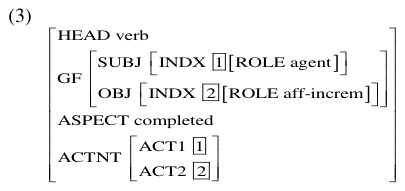
While a structure like (3) will reflect constructional features of a sentence like John ate the cake, a representation of what it means will also reflect the content of the various words. A strategy of "first stepping stone semantics" is to simply put in a representation of the word itself in a slot designated for semantic argument structure, which for the sentence in question will mean extending (3) as (4) (modulo definiteness marking of the object):
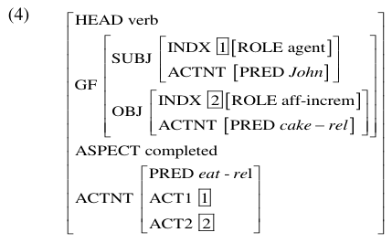
To obtain this, each word must be lexically specified for its semantic contribution, along with a recipe of how it fits in relative to the overall structure (4). The use of valence lists in HPSG serves such a purpose; for the case in point, eat will thereby have as its lexical specification a structure like (5), where the valence list attributes SPR and COMPS enumerate the items with which the word has to combine (where failure for appropriate items to obtain in the word string to be analyzed means that this lexical structure is not appropriate for the analysis process):
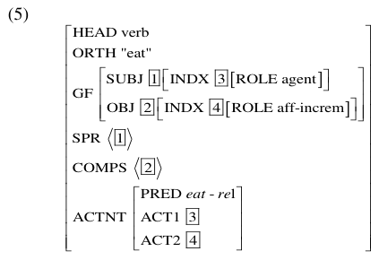
A parsing algorithm is in principle necessary if one wants to construe a grammar as compositional, since compositionality resides in combinatorial relations between constituents, meaning that a grammar as a whole is compositional if all phenomena to be covered by it can be construed exclusively in terms of combinatorial operations involving all parts of the sentences analysed.
It may be noted that standard HPSG in this respect is a parsing approach exclusively, in that it does not include GF notions, so that a parse representation will be without GF and with both valence lists empty, thus being less informative than (4). Adding such notions to the parsing formalism strengthens the formalism, which might be unwanted on other grounds, yielding a situation where one chooses between formats on other grounds than plainly empirical. However, as we turn to the selected areas of Ga grammar to be considered, we will see that even from parsing perspectives, there may be reasons to use GF in the formalism. In (1d), repeated:
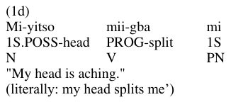
we want to represent the subject as a possessive phrase, where the referent of the whole phrase is a (body)part of the specifier "mi", and this specifier is also identical to the object; in terms of semantics. The first of these constellations we may represent as in (6), labeled as "subject is a BodyPart of subject’s specifier" (of course speaking of their referents), and the second as (7), in a similar vein labeled as "subject’s specifier is Identical to object":
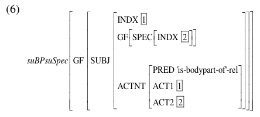
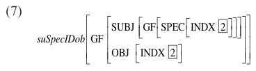
In a full representation of the sentence, (6) and (7) should unify with the verb representation as (8):
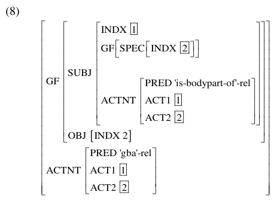
However, although gba "split" is a transitive verb, defining it simply on the model of (5) will fail to induce the relations between the specifier of the subject and the subject and object. What is needed is a lexical representation able to "look down" into the subject, thus "seeing" the item that relative to a valence list of the head noun would be representable as the list "<[SPR]>". This represents a pattern of "non-locality" for which the valence list notation is not defined (i.e., meaning specifying a list inside of an item inside the "SPR" list). A way in which we avoid violating this restriction is by, instead of an extra embedded list, using GF attributes reflecting the way they are used in (8), so that the lexical specification for gba relative to the kind of frame in question is (9):
(9) Lexical entry of gba in (1d):
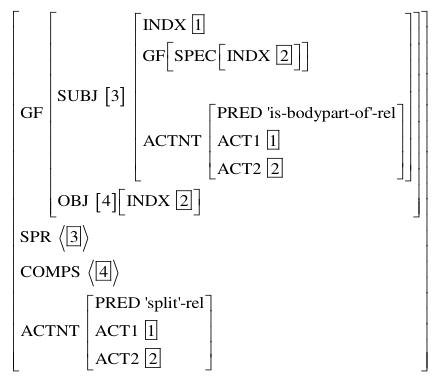
With similar reasoning for the other cases in (1) and related constructions, this demonstrates the use of including GFs as a construct also in the parsing algorithm. Similar cases have not been prominent in the discussion of the design of standard version of HPSG, and so the phenomenon of Nominal complexes with relational nouns and possessive constructions may represent motivation for this item of modification of the general formal design, and thus a motivation coming from Ga. It has been adopted in the current grammar.
3. Multiverb expressions
Multiverb expressions types are well exemplified in the literature, so here we just point to two types and discuss some aspects of their analysis.
3.1 Serial Verb Construction (SVC)
An SVC appears as a sequencing of any number of VPs, with pervasive uniformity between the verbs, both in their morphology and regarding their arguments. Interpretations range from temporal sequences of events reflecting the sequencing of VPs to pairwise more special combinations. (10) is an example of the latter (from Dakubu (unpublished a)):

This SVC has two verbs, and as is often the case in Ga SVCs, both with the subject expressed by a clitic; the subjects are identical, and likewise the aspects of the verbs.
In AVM form, this can be provisionally exposed as follows, where the notions 'V1', 'V2' are standard labels for the VPs in an SVC sequence:
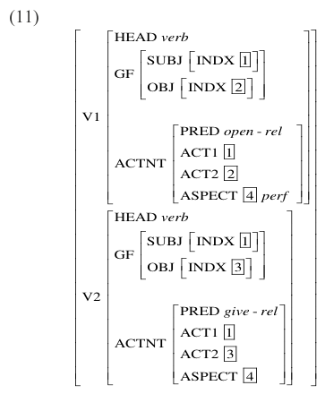
We now face the question whether the SVC should be counted as multi-headed, or whether there are linguistic reasons to count one VP as head and the other as something else. VPs in SVCs are generally too tightly integrated to count as coordination structures - cf. Hellan et al. (2003) for a discussion relative to temporally sequenced VPs in SVCs in Akan (commonly referred to as 'chaining SVCs), an argumentation which may well also hold for Ga, and especially for a case like this where the interpretation is not one of temporal sequencing. If not a coordination structure, another possibility may be a structure of complementation: although gbele ('open') does not have a meaning which would motivate counting the subsequent VP as a complement, one might perhaps count the whole construction as a phraseological unit and technically count the first verb as binding the second VP to it as a fixed part. The third option is an analysis of the sequencing of VPs is as adjunction between the VPs; this is in general plausible for cases of temporally sequenced VPs where any number of VPs can freely occur; structures like (10) could then be treated as a limiting case of such structures.
Given this as most plausible for the 'free' VP sequences, how can this be formally implemented, and how would the attributes V1 and V2 in case be introduced? Adjunction to, or modification of, VPs is commonly construed as the adjunct being a predicate of the event expressed by the head VP. This will be false for the VP sequencing, since the adjoined VP is predicated of the same entity as the head VP is predicated of. To express this, the grammar must contain, in addition to the 'event modification' rule, a modification rule imposing coreference between the subjects. (12) is such a rule, equating the ACT1 of the adjunct ('NON-HEAD-DTR') not to the event index of the head, but to the index of its subject; we here also indicate the introduction of 'V1' and 'V2'.
(12) Head-Modifier rule II (partial formlation)

This rule schema will apply recursively when there are more than two VPs.
The motivated status of such a rule of modification is again a respect in which Ga and similar languages may be seen as adding a formal possibility to the formal inventories sustained so far.
The by far most common pattern of 'argument sharing' in SVCs is one of identical subjects. In the literature also identity between objects has been recognized - as 'object sharing' - and even identity between the object of one VP and the subject of the following VP, called 'switch sharing'. These are rare in Ga, but exemplified in Akan by examples like (13):
(13)
'switch sharing' between object of one verb and subject of the subsequent verb (Akan)
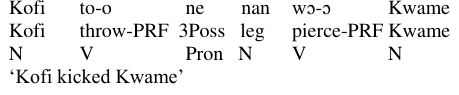
Unlike the case above, where both COMPS lists are empty at the point where two VPs combine, one here needs to be able to state that the object of the first VP is identical to the ACT1 of the second VP. Such an identity is hard to state if all one can refer to in the first VP is an empty COMPS list. Once the object is also represented in the GF specification of the first VP, however, one has a reference point. An example with object sharing in Ga is given in (16) below. Although the status of both of these patterns involving objects is a bit controversial, both construction types are accommodated in the grammar, and may potentially provide further motivation for including GF notions in the grammar formalism.
3.2 Extended Verb Complex (EVC) and more
For descriptions of this construction in Ga see Dakubu (2008), Dakubu et al. (2007), Dakubu (2004a), and in Dangme, see Dakubu (1987). The construction type holds a particular interest in that EVCs act as single verbs relative to the environment, but are dividable into word-like units, namely a limited number of preverbs (up to three in a row) together with the main verb. A simple example is the Ga sentence (14), where kɛ is a preverb:
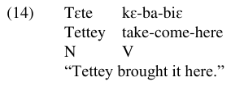
The valence of the main verb determines the valence of the whole relative to the containing clause, its subject is necessarily the subject of all the preverbs with the same role, and its Aspect, Modality and Polarity marking is wholly determined from left to right. Most preverbs are intransitive, only kɛ is transitive.
EVCs, which are perhaps themselves frozen SVCs, can serve in the role of verbs also in SVCs, which gives a complex structure of verb embeddings. Unlike SVCs, in EVCs a complementation analysis is reasonable, since a preverb needs to be followed by a verb - another preverb, or the main verb. These analyses are laid out in Dakubu et al. (2007) and Hellan and Dakubu (2010), and included in the grammar formalism.
Also to be mentioned is the construction in (15):
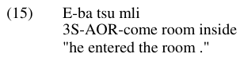
The phrase tsu mli in our resources is counted as a noun phrase, and acting as object of ba ("come", which in addition has intransitive and other uses).
4. Developing the resources
The backbone of a deep computational grammar is its lexicon. The starting point for this lexicon in the Ga grammar is a Toolbox project holding data of the general-purpose published dictionary (Dakubu 2009). The lexicon file in this project consists of 80,000 lines of code, with 7080 entries, of which 5014 for nouns, and 935 for verbs, of which 722 were annotated for valence. From this Toolbox repository a valence lexicon was created. As a first step the Toolbox lexicon was augmented by valence information such that each entry reflects a unique valence frame or multiverb environment. For instance, for the verb su as used in the sentence (16), the design of a lexical entry in the amended Toolbox version is as shown in Figure 1; the valence codes are written into the lexical entry following the general "field" style of Toolbox, where the fields marked \pdl-\pdv represent inflectional information of the lexeme, and the fields \xe, \xg, \xv together constitute a standard linguistic glossing with \xv as a word-and-morph break-up, \xg as morphological and English gloss, and \xe as a free English translation; the valence (or, as here, SVC environment) is encoded as the fields starting with \sl…;.


Figure 1 Example of Ga Toolbox entry enriched with CL valence/construction annotation
A verb with more than one valence frame having one entry specified per frame, the verb ba, for instance, is represented by 15 different entries in this edition of the Toolbox file. 547 verb lexemes here received altogether 2006 entries annotated in this fashion. In Figure 1, the specification "\hm 3" indicates that this is the third entry with the form su.
The code specifications in the \sl-fields are pulled together in a single string as in (17) (omitting \sl15 and \sl16), read as "a SVC where subject and aspect are identical in all VPs, the role of subject is agent, the head of the second VP is transitive, the first VP’s object is identical to the second VPs object, and the object in the second VP is theme": 12
(17) svSuAspIDALL_suAg-v2tr-v1obIDv2ob-v2obTh
Labels in this style were independently developed as the system Construction Labeling formalism (CL) (cf. Hellan and Dakubu 2010, Dakubu and Hellan 2016), and one of the languages to which it was applied was Ga, in a construction type inventory given in Hellan and Dakubu 2010.
The verb part of the lexical resource was turned into a lexical data structure of the type used in HPSG grammars, consisting of 1980 sequentially numbered entries, with the CL specification indicating the lexical/construction type to which the entry belongs. Figure 2 is the direct counterpart to the Toolbox entry in Figure 1, with su_1448 as the entry identifier, and the formula part
':= …' meaning "belongs to the construction type '…'; this information is stated relative to the first verb, which is thus, formally, counted as a head:
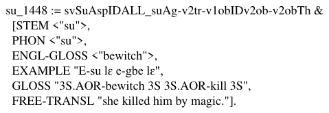
Figure 2 Grammar style counterpart to entry in Figure 1
While this is a constructional representation, a valence representation can be derived in a similar manner from a Toolbox entry, thus, the entry in Figure 3 will directly go into the grammar lexicon as a valence entry of type "transitive with agentive subject and theme object":

Figure 3 Ga Grammar style valence entry
The sentence in (16) also parses by the grammar (formally treating the second VP as an adjunct, as outlined above), but only relative to a transitive frame for su corresponding to the meaning "bewitch".
For a language with many multiverb construction types, it might be tried to feed total expressions like (5) into the verb frame of the first verb, and construe also the formal adjunct as "foreseen" by the head verb, and thus separating the technical combination frame from what is intuitively a valence frame. This, however, is not a possibility that the present grammar ventures into.
To have an impression of how frequently a multiverb expression may be associated with a given verb, the following table indicates how often the types SVC (as "sv"), EVC (as "ev") and Verbid construction (as "trVid" or "intrVid") are among the environments in which a verb can occur (for instance, 14 verb lexemes can occur in both intransitive, transitive and SVC environment), according to the resource built on Dakubu (unpublished a):
Table 1 Distribution of verbs over valence frames and construction types in Ga
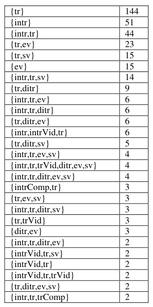
Calibrating these kinds of multiverb environments into a lexicon or grammar resource otherwise will be among the interesting next steps in dealing with digital resources for Volta Basin Kwa languages.
5. The grammar and its environment
As said above, a first version of the Ga grammar follows the formal architecture of Pollard and sag (1994), as used in many grammars adopting the Grammar matrix as a common feature structure repertory (Bender et a. (2010)). The later version, as illustrated here, has a simpler feature structure, which aims at more directly accommodating variation among languages. A guide to its feature structure is given in the pdf 'Building Global Grammar', which takes as point of departure a simple introductory grammar for English used as illustration in Copestake (2002), and stepwise builds up what is there called a 'global' feature structure, both with implementations and description. The description can be accessed at https://typecraft.org/tc2wiki/TypeGram, with a link from the Introduction, while the implementation is linked from http://regdili.hf.ntnu.no:8081/typegramusers/menu, with instructions at the TypeGram site. The specifications concerning Ga sit in a common repository of features covering also Germanic (Norwegian), Bantu (Luganda) and Ethio-semitic (Kistaninya), as illustrated in Figure 5, here with a highlight on the Ga grammar ("GaGram"):

Figure 5 Architecture of resources
Among applications surrounding the grammar system is a procedure for grammar induction from Interlinear Glossed text (IGT), described in Hellan and Beermann (2011, 2014) and Bruland 2011, schematically indicated with an IGT snippet in (18):
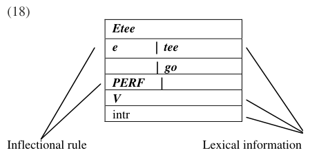
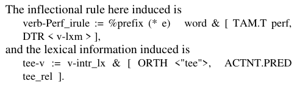
In addition, one can also explore the GLOSS line specifications to obtain "meta-string" versions of sentences of the language, in the case in point with
verb-Perf_irule := %prefix (* PERF) word & [ TAM.T perf, Stem < v-lxm > ].
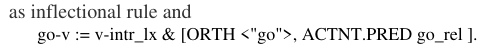
as lexical information induced. Both courses are described at https://typecraft.org/tc2wiki/TypeGram. The latter course instantiates a procedure where the modules of syntactic and semantic parsing can be conducted separate from morphology. Thus, relative to a sentence like (19),

such a "meta" approach will address the construction in the shape (20a) rather than (20b):
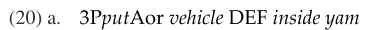
b. Amɛ-wo tsɔne lɛ mli yɛlɛ
This method sustains a use of 145 sentences on the format of (20a) serving as an intermediate test suite for the full set of valence and construction types described in Hellan and Dakubu (2010).
6. Ga valence and verb construction dictionary
The Ga valence dictionary resources are represented as Dakubu (unpublished a) as a conversion from the enriched Toolbox version described in section 4, and in Dakubu (unpublished b) as a larger monograph. The material in Dakubu (unpublished a) is also online accessible as part of MultiVal, a comparative valence resource based on lexicons from LKB grammars for four languages.
The point where this resource fits into the view of Figure 5 is, through its use of the CL labeling, marking its place within a compact cross-linguistic comparison of language valence profiles, which are enumerations of the valence and construction frames realized in a language. Preliminary comparisons of valence profiles for Ga and English suggest that they have less than 20% of their valency frames in common (see, e.g, Dakubu and Hellan (2016, 2017)).
An investigation of valence types in Ga can be related to the research into valence classes started with Levin 1993, followed up, i.a., in VerbNet and in the Leipzig Valency Classes (LVC) Project, being attempts to associate commonalities in morpho-syntactic patterns with semantic factors, both language internally (like Levin and VerbNet) and cross-linguistically (LVC). Establishing valency classes for Ga has a tie to VerbNet in aiming at a fairly large coverage of the language’s verbs, and to LVC in establishing one more coordinate point in the attempt to attain a typologically broad basis for generalizations within this domain.
Given the large discrepancies in valence frames between Ga and English, a good strategy may be to first explore commonalities between Ga and other West African languages. In the present setting, a natural step will for instance be to build a mapping between Ga and Akan lexical information, assuming that the valence labels used for Ga are adequate also for Akan.
7. Conclusion
The view taken on the creation of a 'deep' computational grammar is that it allows one to
- (i) through execution, create a formally tractable representation of structures of the language, where the execution binds one to consistency:
- (ii) reflect on what are the essential structures of the grammar studied, and their relation to structures of other languages for which similar formally consistent investigations have been made;
- (iii) effectively port one's findings to, or into the creation of, other resources.
Not least in the setting of African languages, an additional concern is to identify efficient ways of utilizing existing linguistic resources for the language in question, combined with a formal framework allowing for proper representation of the facts.
For languages with few previous digital facilities, a goal is to be able to develop a number of resources and applications in interaction but at a speed which allows one to digest and actively explore given and new connections. This is the goal of the resources here described, and we have highlighted the role of Prof. Dakubu's lexical resources, the way a grammar's organization of lexical information can lead to further resources, and we have discussed bearings that linguistic structures of Ga, and presumably Volta Basin Kwa in general, have on the formal structures of a grammar framework.
Notes
1 I am grateful to the three reviewers for helpful comments.
2 ISO-639-3 «gaa». Number of speakers in 2013. https://www.ethnologue.com/country/GH/languages
3 See Hellan (2019a) for details on introduction of lexical types.
4 For a recent overview concerning Akan and Ga, see Beermann and Hellan (2018).
5 By convention, in the constellation (i), the path "V2.V2" can be read as "V3", and similarly for higher numbers of VPs. (i)

6 The schema will also be relevant in Indic and other languages with so-called co(n)-verb constructions, where the syntax by itself is marked as modification - and thus unlike the Volta Basin SVC pattern - whereas the argument identities which can obtain match the present case.
7 Presented by Clement Appah at a seminar in Legon, Ghana.
8 See Hellan 2019 for details.
9 Cf. Beermann and Hellan (to appear). In the lexical resource addressed in section 4, this use of ba has the code "ba_3 : v-trobPostp-suAg_obLoc-MOTIONDIRECTED".
10 With such IGTs illustrating verbs and smaller phrases illustrating nouns and other POS, these specifications in the Toolbox file constitute a large corpus which however yet remains to be implemented on a standard corpus format; this situation may apply to Toolbox files for other languages as well.
11 This is a Situation Type label, an aspect of analysis not so far fully integrated in the grammar; as an annotation resource, cf. Hellan (2020). It’s a common observation that many SVCs express a "unique situation", thus that the verb meanings do not constitute separate events but are merged into a single event. Hellan (2019b) is an attempt to give formal expression to this notion, in terms of a layer of semantic representation called Situation Structure, whose interaction with Semantic Argument Structure is outlined in Hellan (2019a), and whose encoding in Situation Type labels is outlined Hellan (2020).
12 The identity of the objects is here not included in the "IDALL" part, leaving open if it is a matter of argument sharing rather than pronominal coreference. Since Ga often realizes subject sharing through pronominal pro-clitics, a counterpart to this strategy for objects could be conceived.
13 Conducted by Tore Bruland; also cf. Hirzel 2006.
14 The Norwegian branch of this system is distinct from the large scale Matrix-based grammar Norsource, (cf. Hellan and Bruland 2015), which has been maintained since 2001. Code files are downloadable from GitHub: https://github.com/Regdili-NTNU/NorSource/tree/master, and it has a web demo at http://regdili.hf.ntnu.no:8081/linguisticAce/parse. Also this grammar uses GF features, and its lexical types belong to the same system as what is presently described.
15 See Dakubu (2002) on the tone system, whose lexical and syntactic impact is not yet reflected in the grammar.
16 Cf. Hellan et al (2014). Online site: http://regdili.hf.ntnu.no:8081/multilanguage_valence_demo/multivalence
17 Cf. for LVC, Malchukov and Comrie (eds) 2015 and http://valpal.info/; for VerbNet http://verbs.colorado.edu/~mpalmer/projects/verbnet.html.
18 It is worth noting that while the VerbNet resource is essentially just a knowledge base, the present system is also used as an integral part of a syntactic parser.
19 Perspectives are offered in Atoyebi (2015), Schaefer and Egbokhare. (2015), Creissels (2015), in the frame of LVC.
20 Cf. Beermann and Hellan (2018) and (to appear).
8. Bibliographical References
Atoyebi, Joseph Dele Valency classes in Yorùbá. In: Malchukov, A., and B. Comrie (eds), pages 299-326.
Beermann, Dorothee, and Lars Hellan. 2018. West African Serial verb constructions: the case of Akan and Ga. In: Agwuele, Augustine, and Adams Bodomo (eds) The Routledge Handbook of African Linguistics. London and New York: Routledge. Pg. 207-221.
Beermann, D. and L. Hellan. To appear. Enhancing grammar and valence resources for Akan and Ga
Bender, Emily.M., Drellishak, S., Fokkens, A., Poulson, L. and Saleem, S. 2010. Grammar Customization. In Research on Language & Computation, Volume 8, Number 1, 23-72.
Bruland, T. (2011). Creating TypeGram data from TypeCraft. Presentation at India 2011, NTNU.
Copestake, Ann. 2002. Implementing Typed Feature Structure Grammars. CSLI Publications.
Creissels, Denis. 2015. Valency properties of Mandinka verbs. In: Malchukov, A., and B. Comrie (eds) Pages 221-260
Dakubu, M.E. Kropp, 2002. Ga Phonology. Institute of African Studies, Legon, Ghana.
Dakubu, M.E. Kropp, 2004a. The Ga preverb kɛ revisited. In Dakubu and Osam, eds., Studies in the Languages of the Volta Basin 2: 113-134. Legon: Linguistics Dept.
Dakubu, M.E. Kropp, 2004b. Ga clauses without syntactic subjects. Journal of African Languages and Linguistics 25.1: 1-40.
Dakubu, M.E. Kropp, 2008 Ga verb features. In Ameka and Dakubu eds., Aspect and Modality in Kwa Languages. Amsterdam & Philadelphia: John Benjamins Publishing Co. p. 91-134.
Dakubu, M. E. Kropp, 2009. Ga-English Dictionary with English-Ga Index. Accra: Black Mask Publishers
Dakubu, Mary Esther Kropp. Unpublished a. "Ga_verb_dictionary_for_digital_processing". Accessed for download at: https://typecraft.org/tc2wiki/Ga_Valence_Profile
Dakubu, Mary Esther Kropp. Unpublished b. Ga Verbs and their constructions. Monograph ms, Univ. of Ghana.
Dakubu, M.E.K., L. Hellan and D. Beermann. 2007. Verb Sequencing Constraints in Ga: Serial Verb Constructions and the Extended Verb Complex. In St. Müller (ed) Proceedings of the 14 th International Conference on Head-Driven Phrase Structure Grammar. Stanford: CSLI Publications. (/http://cslipublications.stanford.edu/)
Dakubu, M.E. Kropp and Lars Hellan. 2016. Verb Classes and Valency classes in Ga. Paper read at Symposium on West African Languages (SyWAL) II, Vienna.
Dakubu, M.E. Kropp and Lars Hellan. 2017. A labeling system for valency: linguistic coverage and applications. In Hellan, L., Malchukov, A., and Cennamo, M (eds) Contrastive studies in Valency. Amsterdam & Philadelphia: John Benjamins Publ. Co.
Hellan, Lars. 2019a. Construction-Based Compositional Grammar. March 2019. Journal of Logic Language and Information. DOI: 10.1007/s10849-019-09284-5
Hellan, Lars and M.E. Kropp Dakubu. 2010. Identifying verb constructions cross-linguistically. In Studies in the Languages of the Volta Basin 6.3. Legon: Linguistics Department, University of Ghana.
Hellan, Lars, and Dorothee Beermann. 2014. Inducing grammars from IGT. In Z. Vetulani and J. Mariani (eds.) Human Language Technologies as a Challenge for Computer Science and Linguistics. Springer.
Hellan, L., D. Beermann, T. Bruland, M.E.K. Dakubu, and M. Marimon. 2014. MultiVal: Towards a multilingual valence lexicon. In Calzolari, Nicoletta et al. (eds.) Proceedings of the 9th International Conference on Language Resources and Evaluation (LREC 2014), pages 2785-2792, Reykjavík, Iceland. ELRA.
Hellan, Lars and Tore Bruland. 2015. A cluster of applications around a Deep Grammar. In: Vetulani et al. (eds) Proceedings from The Language & Technology Conference (LTC) 2015, Poznan.
Hirzel, Hannes. 2006. "Porting lexicon files from Toolbox into LKB-grammars: A case study for a grammar of Ga." https://typecraft.org/tc2wiki/File:Toolbox-LKB-Link-slides_-_version_4.pdf.
Levin, B. 1993. English Verb Classes and Alternations. Chicago IL: University of Chicago Press.
Malchukov, Andrej L. & Comrie, Bernard (eds.) (2015). Valency classes in the world's languages. Berlin: De Gruyter Mouton. 2015.
Pollard, Carl and Ivan Sag (1994) Head-driven Phrase Structure Grammar. Chicago Univ. Press.
Rask, R. 1828. Vejledning til Akra-Sproget på Kysten Ginea ("Introduction to the Accra language on the Guinea Coast").
Schaefer, R.B, and Francis O. Egbokhare. 2015. Emai valency classes and their alternations. In Malchukov, A. and B. Comrie (eds) 2015. Pp. 261-298.
9. Language Resource References
https://typecraft.org/tc2wiki/TypeGramhttps://typecraft.org/tc2wiki/Ga_Valence_Profile
A Computational Grammar of Ga
Une grammaire computationnelle du Ga
Affiliations
Lars Hellan
Norwegian University of Science and Technology, Norway
Affiliations
Lars Hellan
Norwegian University of Science and Technology, Norway
Abstract
Résumé
The paper describes aspects of an HPSG style computational grammar of the West African language Ga (a Kwa language spoken in the Accra area of Ghana). As a Volta Basin Kwa language, Ga features many types of multiverb expressions and other particular constructional patterns in the verbal and nominal domain. The paper highlights theoretical and formal features of the grammar motivated by these phenomena, some of them possibly innovative to the formal framework. As a so-called deep grammar of the language, it hosts a rich lexical structure, and we describe ways in which the grammar builds on previously available lexical resources. We outline an environment of current resources in which the grammar is part, and lines of research and development in which it and its environment can be used.
L'article décrit les aspects d'une grammaire computationnelle de style HPSG de la langue ouest-africaine Ga (une langue Kwa parlée dans la région d'Accra au Ghana). En tant que langue du Kwa du bassin de la Volta, le Ga présente de nombreux types d'expressions multiverbes et d'autres modèles de construction particuliers dans le domaine verbal et nominal. L'article met en lumière les caractéristiques théoriques et formelles de la grammaire motivées par ces phénomènes, certaines d'entre elles pouvant être innovantes pour le cadre formel. En tant que grammaire dite profonde de la langue, elle abrite une structure lexicale riche, et nous décrivons les moyens par lesquels la grammaire s'appuie sur les ressources lexicales disponibles auparavant. Nous esquissons un environnement de ressources actuelles dans lequel la grammaire fait partie, et les lignes de recherche et de développement dans lesquelles elle et son environnement peuvent être utilisés.
Keywords
Mots-clés
Ga, Kwa, computational grammar, typed feature structures, construction level compositional analysis, nominal structures, multiverb constructions
Ga, Kwa, grammaire computationnelle, structures de traits typées, analyse compositionnelle de niveau constructionnel, structures nominales, constructions multiverbales
1. Introduction
1. Introduction
Ga is a Kwa language spoken in the Accra area of Ghana with about 745,000 speakers. Linguistic descriptions date back to early 1800 (cf. Rask (1828)), and although digital text resources are few, it is well studied linguistically, and has some advanced resources such as the Ga-English dictionary (Dakubu 2009). The present article describes digital resources which in important respects derive from this dictionary and its underlying Toolbox lexicon. We mainly focus on a computational grammar of Ga, whose development started in 2005, and also on a valence lexicon, whose development started in 2008. The developments were coordinated, althought each at its own pace, and conducted jointly by Professor Mary Esther Kropp Dakubu and the author until Prof. Dakubu’s death in 2016.
Le Ga est une langue Kwa parlée dans la région d'Accra au Ghana avec environ 745 000 locuteurs. Les descriptions linguistiques remontent au début des années 1800 (cf. Rask (1828)), et bien que les ressources textuelles numériques soient rares, elle est bien étudiée linguistiquement, et possède certaines ressources avancées telles que le dictionnaire ga-anglais (Dakubu 2009). Le présent article décrit les ressources numériques qui dérivent en grande partie de ce dictionnaire et de son lexique Toolbox sous-jacent. Nous nous concentrons principalement sur une grammaire computationnelle du ga, dont le développement a commencé en 2005, ainsi que sur un lexique de valence, dont le développement a commencé en 2008. Les développements ont été coordonnés, bien que chacun à son propre rythme, et menés conjointement par la professeure Mary Esther Kropp Dakubu et l'auteur jusqu'au décès de la professeure Dakubu en 2016.
Computational grammars are programs which automatically assign various types of analysis to sentences of a language - they range from morphological parsers, which recognize words’ part of speech (POS) and morphological build-up, via dependency parsers which recognize syntactic phrases and dependency relations between words internal to a phrase and between phrases, to so-called "deep" parsers which also recognize lexical structures and semantic properties of words and their combinations. Deep parsers reflect frameworks of formal grammar such as Lexical Functional Grammar (abbreviated "LFG", cf. Bresnan (2001)) and Head-Driven Phrase structure grammar (abbreviated "HPSG", cf. Pollard and Sag (1994), Copestake (2002)); the grammar to be presented mainly follows HPSG but with some elements of LFG; it technically is developed at the LKB platform described in Copestake (2002).
Les grammaires computationnelles sont des programmes qui attribuent automatiquement divers types d'analyse aux phrases d'une langue - ils vont des analyseurs syntaxiques morphologiques, qui reconnaissent la catégorie grammaticale (POS) et la structure morphologique des mots, en passant par les analyseurs syntaxiques de dépendance qui reconnaissent les syntagmes syntaxiques et les relations de dépendance entre les mots à l'intérieur d'un syntagme et entre les syntagmes, jusqu'aux analyseurs syntaxiques dits « profonds » qui reconnaissent également les structures lexicales et les propriétés sémantiques des mots et de leurs combinaisons. Les analyseurs syntaxiques profonds reflètent des cadres de grammaire formelle tels que la Grammaire Lexicale Fonctionnelle (en abrégé « LFG », cf. Bresnan (2001)) et la grammaire de structure de phrase orientée tête (en abrégé « HPSG », cf. Pollard et Sag (1994), Copestake (2002)) ; la grammaire présentée suit principalement la HPSG mais avec certains éléments de la LFG ; elle est techniquement développée sur la plateforme LKB décrite dans Copestake (2002).
Verb valence lexicons are lexicons giving concise enumerations of the valence frames of each verb, i.e., enumerations of the possible environments of a verb described in terms of the so-called valence-bound items in the environments (following the terminology of Tesnière (1959)). A principled meeting point between valence lexicons and deep grammars is that the verb lexicon of a deep grammar will have explicit valence information. From either side one can thereby derive the other (and even in turn perform cyclical improvements, taking advantage of articulations on the derived side proving useful also on the other side, and vice versa). In the present case, once the valence lexicon was established, it was imported into the grammar.
Les lexiques de valence des verbes sont des lexiques donnant des énumérations concises des cadres de valence de chaque verbe, c'est-à-dire des énumérations des environnements possibles d'un verbe décrits en termes d'éléments dits liés à la valence dans les environnements (suivant la terminologie de Tesnière (1959)). Un point de rencontre de principe entre les lexiques de valence et les grammaires profondes est que le lexique des verbes d'une grammaire profonde aura des informations de valence explicites. De chaque côté on peut ainsi dériver l'autre (et même à son tour effectuer des améliorations cycliques, en profitant des articulations du côté dérivé qui se révèlent utiles aussi de l'autre côté, et vice versa). Dans le cas présent, une fois le lexique de valence établi, il a été importé dans la grammaire.
Both types of resources have a solid foundation in Indo-European languages, and one can name various kinds of practical applications that they serve. However, equally interesting is what these resources for Ga can tell us regarding what are basic and necessary structures of grammar and valence. For instance, in an HPSG based grammar, the distinction between argument (i.e., valence-bound) and adjunct (i.e., not valence-bound) is basic like in linguistic traditions in Indo-European languages, and a question is whether it can be maintained in a grammar of a Kwa language. Likewise, the grammatical articulation of some semantic structures is quite different in Ga from what one expects in Indo-European languages.
Les deux types de ressources ont une base solide dans les langues indo-européennes, et on peut nommer divers types d'applications pratiques qu'ils servent. Cependant, il est tout aussi intéressant de voir ce que ces ressources pour le Ga peuvent nous apprendre sur les structures de base et nécessaires de la grammaire et de la valence. Par exemple, dans une grammaire basée sur HPSG, la distinction entre argument (c'est-à-dire lié à la valence) et adjoint (c'est-à-dire non lié à la valence) est de base comme dans les traditions linguistiques des langues indo-européennes, et une question est de savoir si elle peut être maintenue dans une grammaire d'une langue kwa. De même, l'articulation grammaticale de certaines structures sémantiques est assez différente en Ga de ce que l'on attend en langues indo-européennes.
To be more concrete, Kwa languages like Ga and Akan are known to make little use of prepositions and adjectives, so that constructions involving nouns and verbs may be seen as playing a larger role than, e.g., in Indo-European languages. Thus multiverb expressions are known to play a large role in the languages, subsuming Serial Verb Constructions (SVCs), Extended Verb Complexes (EVCs) which are sequences of preverbs preceding a main verb, and Verbid Constructions (ViD), where verb phrases play a role similar to what adverbials play in Indo-European languages (see Dakubu 2004a, 2008, Dakubu et al. 2007, Dakubu 2013 for analysis of many of the construction types). Such constructions raise the question whether there can be more than one verbal head per sentence; and if not, whether the argument-adjunct distinction is at all relevant to describing the relationships between the verbs. A further reflex of the lack of prepositions is that spatial specification often take the shape of transitive constructions. Moreover, prenominal specifiers manifest a complexity well beyond what one finds in Indo-European languages. The latter construction types will be exemplified and analyzed in section 2. In section 3 we exemplify and show the analysis of multiverb constructions. Section 4 recapitulates the development of the valence lexicon from the Toolbox source, and accompanying resources. Section 5 discusses possible further developments of the resources described. Examples throughout are from the works by Dakubu cited above, from the "Ga Appendix" to Hellan and Dakubu 2010, and from Dakubu (Unpublished a). The latter is the presentation of the valence lexicon that we will be referring to, with about 2000 entries, where each entry represents one frame of a given verb. Thus, when a verb has n frames, it will be represented in n entries. To each entry is provided a short example, whereby this is also a corpus of short sentences.
Pour être plus concret, les langues Kwa comme le Ga et l'Akan sont connues pour faire peu usage de prépositions et d'adjectifs, de sorte que les constructions impliquant des noms et des verbes peuvent être considérées comme jouant un rôle plus important que, par exemple, dans les langues indo-européennes. Ainsi, les expressions multiverbes sont connues pour jouer un grand rôle dans ces langues, englobant les constructions de verbes en série (SVC), les complexes de verbes étendus (EVC), qui sont des séquences de préverbes précédant un verbe principal, et les constructions verbiques (ViD), où les syntagmes verbaux jouent un rôle similaire à celui des adverbiaux dans les langues indo-européennes (voir Dakubu 2004a, 2008, Dakubu et al. 2007, Dakubu 2013 pour une analyse de nombreux types de constructions). De telles constructions soulèvent la question de savoir s'il peut y avoir plus d'une tête verbale par phrase; et sinon, si la distinction argument-adjoint est du tout pertinente pour décrire les relations entre les verbes. Un autre reflet de l'absence de prépositions est que la spécification spatiale prend souvent la forme de constructions transitives. De plus, les spécificateurs prénominaux manifestent une complexité bien au-delà de ce que l'on trouve dans les langues indo-européennes. Ces derniers types de construction seront illustrés et analysés dans la section 2. Dans la section 3, nous exemplifions et montrons l'analyse des constructions multiverbales. La section 4 résume le développement du lexique de valence à partir de la source Toolbox, ainsi que les ressources accompagnantes. La section 5 discute des développements possibles ultérieurs des ressources décrites. Les exemples tout au long sont tirés des travaux de Dakubu cités ci-dessus, de l'« Annexe Ga » de Hellan et Dakubu 2010, et de Dakubu (Inédit a). Ce dernier est la présentation du lexique de valence auquel nous ferons référence, avec environ 2000 entrées, où chaque entrée représente un cadre d'un verbe donné. Ainsi, lorsqu'un verbe a n cadres, il sera représenté par n entrées. À chaque entrée est fourni un court exemple, ce qui constitue également un corpus de courtes phrases.
2. Nominal complexes with relational nouns and possessive constructions
2. Complexes nominaux avec noms relationnels et constructions possessives
2.1 Examples
2.1 Exemples
Nominal complexes with relational nouns and possessive constructions are exemplified in (1):
Les complexes nominaux avec des noms relationnels et des constructions possessives sont illustrés dans (1):
In each sentence, the full NP is headed by a relational noun which has a possessive specifier, and this specifier is coreferential with a pronoun (as prefix or freestanding). Of the 2000 sentences in the corpus mentioned, no less than 690 have an object headed by a relational noun, and 100 have a subject headed by a relational noun, often with a bodypart or identity reading. This attests to the importance of analytically representing nominal complexes with relational nouns and possessive constructions.
Dans chaque phrase, le syntagme nominal complet a pour tête un nom relationnel qui a un spécificateur possessif, et ce spécificateur est coréférentiel avec un pronom (comme préfixe ou indépendant). Sur les 2000 phrases du corpus mentionné, pas moins de 690 ont un objet dont la tête est un nom relationnel, et 100 ont un sujet dont la tête est un nom relationnel, souvent avec une interprétation de partie du corps ou d'identité. Cela témoigne de l'importance de représenter analytiquement les complexes nominaux avec des noms relationnels et des constructions possessives.
2.2 Analysis
2.2 Analyse
A first installment of the grammar follows the HPSG Matrix (Bender et al. 2010), illustrated in Dakubu et al. 2007, while in a more recent version the grammar is designed according to the architecture outlined in Hellan 2019; both use the LKB platform, whose formalism is a Typed Feature Structure (TFS) system. Information in such a system is generally exposed through Attribute Value Matrices (AVMs), where each AVM belongs to a type, and attributes are introduced (declared) according to the following conventions:
Un premier volet de la grammaire suit la Matrice HPSG (Bender et al. 2010), illustrée dans Dakubu et al. 2007, tandis que dans une version plus récente, la grammaire est conçue selon l'architecture décrite dans Hellan 2019; les deux utilisent la plateforme LKB, dont le formalisme est un système de Structure de Caractéristiques Typées (TFS). L'information dans un tel système est généralement exposée par des matrices de valeurs d'attributs (AVM), où chaque AVM appartient à un type, et les attributs sont introduits (déclarés) selon les conventions suivantes:
[A] A given type introduces the same attribute(s) no matter in which environment it is used.
[A] Un type donné introduit le même(s) attribut(s), quel que soit l'environnement dans lequel il est utilisé.
[B] A given attribute is declared by one type only (but occurs with all of its subtypes).
[B] Un attribut donné est déclaré par un seul type (mais se produit avec tous ses sous-types).
In a TFS representing a grammar, there are many type hierarchies, representing POS, tenses, semantic roles, etc. ; some of these hierarchies do without attributes, while the following ones do. Types for grammatical functions (values of the attribute "GF") and actants (participants in semantic argument structure, represented as values of the attribute "ACTNT") include those indicated below: the gramfct subtypes declare the GF attributes ("SUBJ" and "OBJ") and the actnt subtypes declare the semantic argument structure attributes ("ACT1" and "ACT2"):
Dans un TFS représentant une grammaire, il existe de nombreuses hiérarchies de types, représentant le POS, les temps, les rôles sémantiques, etc. ; certaines de ces hiérarchies n'ont pas d'attributs, tandis que les suivantes en ont. Les types pour les fonctions grammaticales (valeurs de l'attribut "GF") et les actants (participants à la structure d'argument sémantique, représentés par les valeurs de l'attribut "ACTNT") incluent ceux indiqués ci-dessous : les sous-types gramfct déclarent les attributs GF ("SUBJ" et "OBJ") et les sous-types actnt déclarent les attributs de la structure d'argument sémantique ("ACT1" et "ACT2") :
The way in which these attributes combine in an AVM of a transitive structure, as in a sentence like John ate the cake, is illustrated in (3); the co-numbering "1" and "2" indicate that the referential index of the subject is the ACT(ant)1 and the referential index of the object is the ACT(ant)2:
La manière dont ces attributs se combinent dans une AVM d'une structure transitive, comme dans une phrase telle que John ate the cake, est illustrée en (3) ; la co-numérotation "1" et "2" indique que l'index référentiel du sujet est l'ACT(ant)1 et l'index référentiel de l'objet est l'ACT(ant)2 :
While a structure like (3) will reflect constructional features of a sentence like John ate the cake, a representation of what it means will also reflect the content of the various words. A strategy of "first stepping stone semantics" is to simply put in a representation of the word itself in a slot designated for semantic argument structure, which for the sentence in question will mean extending (3) as (4) (modulo definiteness marking of the object):
Alors qu'une structure comme (3) reflétera les caractéristiques constructionnelles d'une phrase comme John ate the cake, une représentation de ce qu'elle signifie reflétera également le contenu des divers mots. Une stratégie de « sémantique du premier tremplin » consiste à simplement placer une représentation du mot lui-même dans un emplacement désigné pour la structure argumentale sémantique, ce qui, pour la phrase en question, signifiera étendre (3) en (4) (modulo le marquage de définitude de l'objet) :
To obtain this, each word must be lexically specified for its semantic contribution, along with a recipe of how it fits in relative to the overall structure (4). The use of valence lists in HPSG serves such a purpose; for the case in point, eat will thereby have as its lexical specification a structure like (5), where the valence list attributes SPR and COMPS enumerate the items with which the word has to combine (where failure for appropriate items to obtain in the word string to be analyzed means that this lexical structure is not appropriate for the analysis process):
Pour obtenir cela, chaque mot doit être spécifié lexicalement pour sa contribution sémantique, ainsi que pour une recette indiquant comment il s'intègre par rapport à la structure globale (4). L'utilisation de listes de valence dans la HPSG sert un tel objectif ; pour le cas en question, eat aura ainsi comme spécification lexicale une structure comme (5), où les attributs de liste de valence SPR et COMPS énumèrent les éléments avec lesquels le mot doit se combiner (où l'échec de l'obtention d'éléments appropriés dans la chaîne de mots à analyser signifie que cette structure lexicale n'est pas appropriée pour le processus d'analyse) :
A parsing algorithm is in principle necessary if one wants to construe a grammar as compositional, since compositionality resides in combinatorial relations between constituents, meaning that a grammar as a whole is compositional if all phenomena to be covered by it can be construed exclusively in terms of combinatorial operations involving all parts of the sentences analysed.
Un algorithme de parsing est en principe nécessaire si l'on veut considérer une grammaire comme compositionnelle, puisque la compositionnalité réside dans les relations combinatoires entre les constituants, ce qui signifie qu'une grammaire dans son ensemble est compositionnelle si tous les phénomènes à couvrir par celle-ci peuvent être interprétés exclusivement en termes d'opérations combinatoires impliquant toutes les parties des phrases analysées.
It may be noted that standard HPSG in this respect is a parsing approach exclusively, in that it does not include GF notions, so that a parse representation will be without GF and with both valence lists empty, thus being less informative than (4). Adding such notions to the parsing formalism strengthens the formalism, which might be unwanted on other grounds, yielding a situation where one chooses between formats on other grounds than plainly empirical. However, as we turn to the selected areas of Ga grammar to be considered, we will see that even from parsing perspectives, there may be reasons to use GF in the formalism. In (1d), repeated:
On peut noter que le HPSG standard est à cet égard exclusivement une approche d'analyse syntaxique, en ce qu'il n'inclut pas de notions de GF, de sorte qu'une représentation d'analyse sera sans GF et avec les deux listes de valence vides, étant ainsi moins informative que (4). L'ajout de telles notions au formalisme d'analyse syntaxique renforce le formalisme, ce qui peut être indésirable pour d'autres raisons, produisant une situation où l'on choisit entre des formats pour d'autres motifs que purement empiriques. Cependant, en nous tournant vers les domaines choisis de la grammaire du ga à considérer, nous verrons que même du point de vue de l'analyse syntaxique, il peut y avoir des raisons d'utiliser les GF dans le formalisme. Dans (1d), répété :
we want to represent the subject as a possessive phrase, where the referent of the whole phrase is a (body)part of the specifier "mi", and this specifier is also identical to the object; in terms of semantics. The first of these constellations we may represent as in (6), labeled as "subject is a BodyPart of subject’s specifier" (of course speaking of their referents), and the second as (7), in a similar vein labeled as "subject’s specifier is Identical to object":
nous voulons représenter le sujet comme un syntagme possessif, où le référent de l'ensemble du syntagme est une partie du corps du spécificateur « mi », et ce spécificateur est également identique à l'objet ; en termes de sémantique. La première de ces constellations peut être représentée comme en (6), étiquetée "le sujet est un BodyPart du spécificateur du sujet" (en parlant bien sûr de leurs référents), et la seconde comme en (7), de manière similaire étiquetée "le spécificateur du sujet est Identique à l'objet" :
In a full representation of the sentence, (6) and (7) should unify with the verb representation as (8):
Dans une représentation complète de la phrase, (6) et (7) devraient s'unifier avec la représentation du verbe comme en (8) :
However, although gba "split" is a transitive verb, defining it simply on the model of (5) will fail to induce the relations between the specifier of the subject and the subject and object. What is needed is a lexical representation able to "look down" into the subject, thus "seeing" the item that relative to a valence list of the head noun would be representable as the list "<[SPR]>". This represents a pattern of "non-locality" for which the valence list notation is not defined (i.e., meaning specifying a list inside of an item inside the "SPR" list). A way in which we avoid violating this restriction is by, instead of an extra embedded list, using GF attributes reflecting the way they are used in (8), so that the lexical specification for gba relative to the kind of frame in question is (9):
Cependant, bien que gba "split" soit un verbe transitif, le définir simplement sur le modèle de (5) ne parviendra pas à induire les relations entre le spécificateur du sujet et le sujet et l'objet. Ce qu'il faut, c'est une représentation lexicale capable de "regarder vers le bas" dans le sujet, "voyant" ainsi l'élément qui, par rapport à une liste de valence du nom principal, serait représentable comme la liste "<[SPR]>". Cela représente un modèle de "non-localité" pour lequel la notation de liste de valence n'est pas définie (c'est-à-dire, signifiant spécifier une liste à l'intérieur d'un élément à l'intérieur de la liste "SPR"). Une manière dont nous évitons de violer cette restriction est d'utiliser, au lieu d'une liste intégrée supplémentaire, des attributs GF reflétant la manière dont ils sont utilisés dans (8), de sorte que la spécification lexicale pour gba par rapport au type de cadre en question est (9) :
(9) Lexical entry of gba in (1d):
(9) Entrée lexicale de gba dans (1d):
With similar reasoning for the other cases in (1) and related constructions, this demonstrates the use of including GFs as a construct also in the parsing algorithm. Similar cases have not been prominent in the discussion of the design of standard version of HPSG, and so the phenomenon of Nominal complexes with relational nouns and possessive constructions may represent motivation for this item of modification of the general formal design, and thus a motivation coming from Ga. It has been adopted in the current grammar.
Avec un raisonnement similaire pour les autres cas dans (1) et les constructions apparentées, cela démontre l'utilité d'inclure les GF comme construction également dans l'algorithme d'analyse syntaxique. Des cas similaires n'ont pas été prépondérants dans la discussion sur la conception de la version standard de HPSG, et donc le phénomène des complexes nominaux avec des noms relationnels et des constructions possessives peut représenter une motivation pour cet élément de modification de la conception formelle générale, et ainsi une motivation provenant du ga. Il a été adopté dans la grammaire actuelle.
3. Multiverb expressions
3. Expressions multiverbes
Multiverb expressions types are well exemplified in the literature, so here we just point to two types and discuss some aspects of their analysis.
Les types d'expressions multiverbes sont bien illustrés dans la littérature, nous nous contenterons donc ici de mentionner deux types et de discuter certains aspects de leur analyse.
3.1 Serial Verb Construction (SVC)
3.1 Construction de verbes en série (SVC)
An SVC appears as a sequencing of any number of VPs, with pervasive uniformity between the verbs, both in their morphology and regarding their arguments. Interpretations range from temporal sequences of events reflecting the sequencing of VPs to pairwise more special combinations. (10) is an example of the latter (from Dakubu (unpublished a)):
Un SVC se présente comme une séquence de n'importe quel nombre de VPs, avec une uniformité pervasive entre les verbes, tant dans leur morphologie que concernant leurs arguments. Les interprétations vont de séquences temporelles d'événements reflétant le séquencement des VP à des combinaisons plus spéciales par paires. (10) est un exemple de ce dernier cas (tiré de Dakubu (non publié a)) :
This SVC has two verbs, and as is often the case in Ga SVCs, both with the subject expressed by a clitic; the subjects are identical, and likewise the aspects of the verbs.
Cet SVC possède deux verbes, et comme c'est souvent le cas dans les SVC Ga, les deux avec le sujet exprimé par un clitique ; les sujets sont identiques, et de même les aspects des verbes.
In AVM form, this can be provisionally exposed as follows, where the notions 'V1', 'V2' are standard labels for the VPs in an SVC sequence:
En forme AVM, cela peut être provisoirement exposé comme suit, où les notions 'V1', 'V2' sont des étiquettes standard pour les VPs dans une séquence SVC:
We now face the question whether the SVC should be counted as multi-headed, or whether there are linguistic reasons to count one VP as head and the other as something else. VPs in SVCs are generally too tightly integrated to count as coordination structures - cf. Hellan et al. (2003) for a discussion relative to temporally sequenced VPs in SVCs in Akan (commonly referred to as 'chaining SVCs), an argumentation which may well also hold for Ga, and especially for a case like this where the interpretation is not one of temporal sequencing. If not a coordination structure, another possibility may be a structure of complementation: although gbele ('open') does not have a meaning which would motivate counting the subsequent VP as a complement, one might perhaps count the whole construction as a phraseological unit and technically count the first verb as binding the second VP to it as a fixed part. The third option is an analysis of the sequencing of VPs is as adjunction between the VPs; this is in general plausible for cases of temporally sequenced VPs where any number of VPs can freely occur; structures like (10) could then be treated as a limiting case of such structures.
Nous sommes maintenant confrontés à la question de savoir si le SVC devrait être compté comme multi-tête, ou s'il y a des raisons linguistiques de compter un VP comme tête et l'autre comme autre chose. Les VPs dans les SVC sont généralement trop étroitement intégrés pour être considérés comme des structures de coordination - cf. Hellan et al. (2003) pour une discussion relative aux VPs séquencés temporellement dans les SVC en Akan (souvent appelés 'chaining SVCs), un argument qui peut également s'appliquer à Ga, et surtout pour un cas comme celui-ci où l'interprétation n'est pas celle d'une séquence temporelle. Si ce n'est pas une structure de coordination, une autre possibilité peut être une structure de complémentation: bien que gbele ('ouvert') n'ait pas une signification qui motiverait de compter le VP suivant comme un complément, on pourrait peut-être compter toute la construction comme une unité phraséologique et techniquement compter le premier verbe comme liant le second VP à lui comme une partie fixe. La troisième option est une analyse de la séquence des VPs comme une adjonction entre les VPs ; cela est en général plausible pour les cas de VPs séquencés temporellement où n'importe quel nombre de VPs peut librement se produire ; des structures comme (10) pourraient alors être traitées comme un cas limite de telles structures.
Given this as most plausible for the 'free' VP sequences, how can this be formally implemented, and how would the attributes V1 and V2 in case be introduced? Adjunction to, or modification of, VPs is commonly construed as the adjunct being a predicate of the event expressed by the head VP. This will be false for the VP sequencing, since the adjoined VP is predicated of the same entity as the head VP is predicated of. To express this, the grammar must contain, in addition to the 'event modification' rule, a modification rule imposing coreference between the subjects. (12) is such a rule, equating the ACT1 of the adjunct ('NON-HEAD-DTR') not to the event index of the head, but to the index of its subject; we here also indicate the introduction of 'V1' and 'V2'.
Étant donné que cela est le plus plausible pour les séquences VP 'libres', comment cela peut-il être mis en œuvre formellement, et comment les attributs V1 et V2 dans ce cas seraient-ils introduits ? L'adjonction à des VP, ou leur modification, est communément interprétée comme l'adjoint étant un prédicat de l'événement exprimé par le VP de tête. Ceci sera faux pour le séquençage des VP, puisque le VP adjacent est prédicat de la même entité que le VP principal. Pour exprimer cela, la grammaire doit contenir, en plus de la règle de 'modification d'événement', une règle de modification imposant la coréférence entre les sujets. (12) est une telle règle, égalant l'ACT1 de l'adjoint (« NON-HEAD-DTR ») non pas à l'index d'événement de la tête, mais à l'index de son sujet ; nous indiquons ici aussi l'introduction de « V1 » et « V2 ».
(12) Head-Modifier rule II (partial formlation)
This rule schema will apply recursively when there are more than two VPs.
Ce schéma de règle s'appliquera récursivement lorsqu'il y aura plus de deux VPs.
The motivated status of such a rule of modification is again a respect in which Ga and similar languages may be seen as adding a formal possibility to the formal inventories sustained so far.
Le statut motivé d'une telle règle de modification est à nouveau un aspect dans lequel le ga et les langues similaires peuvent être considérés comme ajoutant une possibilité formelle aux inventaires formels soutenus jusqu'à présent.
The by far most common pattern of 'argument sharing' in SVCs is one of identical subjects. In the literature also identity between objects has been recognized - as 'object sharing' - and even identity between the object of one VP and the subject of the following VP, called 'switch sharing'. These are rare in Ga, but exemplified in Akan by examples like (13):
Le modèle de loin le plus courant de «partage d'argument» dans les SVC est l'un des sujets identiques. Dans la littérature, l'identité entre les objets a également été reconnue - comme « partage d'objets » - et même l'identité entre l'objet d'un VP et le sujet du VP suivant, appelée « partage de commutation ». Ceux-ci sont rares en Ga, mais exemplifiés en Akan par des exemples comme (13) :
(13)
(13)
'switch sharing' between object of one verb and subject of the subsequent verb (Akan)
« partage commuté » entre l'objet d'un verbe et le sujet du verbe suivant (akan)
Unlike the case above, where both COMPS lists are empty at the point where two VPs combine, one here needs to be able to state that the object of the first VP is identical to the ACT1 of the second VP. Such an identity is hard to state if all one can refer to in the first VP is an empty COMPS list. Once the object is also represented in the GF specification of the first VP, however, one has a reference point. An example with object sharing in Ga is given in (16) below. Although the status of both of these patterns involving objects is a bit controversial, both construction types are accommodated in the grammar, and may potentially provide further motivation for including GF notions in the grammar formalism.
Contrairement au cas ci-dessus, où les deux listes COMPS sont vides au point où deux VP se combinent, il faut ici être en mesure d'indiquer que l'objet du premier VP est identique à l'ACT1 du second VP. Une telle identité est difficile à exprimer si tout ce à quoi on peut se référer dans le premier VP est une liste COMPS vide. Une fois que l'objet est également représenté dans la spécification des GF du premier SV, on dispose toutefois d'un point de référence. Un exemple de partage d'objet en Ga est donné en (16) ci-dessous. Bien que le statut de ces deux modèles impliquant des objets soit un peu controversé, les deux types de construction sont pris en compte dans la grammaire, et peuvent potentiellement fournir une motivation supplémentaire pour inclure les notions de GF dans le formalisme grammatical.
3.2 Extended Verb Complex (EVC) and more
3.2 Complexe verbal étendu (EVC) et plus
For descriptions of this construction in Ga see Dakubu (2008), Dakubu et al. (2007), Dakubu (2004a), and in Dangme, see Dakubu (1987). The construction type holds a particular interest in that EVCs act as single verbs relative to the environment, but are dividable into word-like units, namely a limited number of preverbs (up to three in a row) together with the main verb. A simple example is the Ga sentence (14), where kɛ is a preverb:
Pour des descriptions de cette construction en Ga, voir Dakubu (2008), Dakubu et al. (2007), Dakubu (2004a), et en Dangme, voir Dakubu (1987). Le type de construction présente un intérêt particulier dans la mesure où les EVC agissent comme des verbes simples relatifs à l'environnement, mais sont divisibles en unités de type mot, à savoir un nombre limité de préverbes (jusqu'à trois d'affilée) avec le verbe principal. Un exemple simple est la phrase Ga (14), où kɛ est un préverbe :
The valence of the main verb determines the valence of the whole relative to the containing clause, its subject is necessarily the subject of all the preverbs with the same role, and its Aspect, Modality and Polarity marking is wholly determined from left to right. Most preverbs are intransitive, only kɛ is transitive.
La valence du verbe principal détermine la valence de l'ensemble par rapport à la proposition qui le contient, son sujet est nécessairement le sujet de tous les préverbes ayant le même rôle, et son marquage d'Aspect, de Modalité et de Polarité est entièrement déterminé de gauche à droite. La plupart des préverbes sont intransitifs, seul kɛ est transitif.
EVCs, which are perhaps themselves frozen SVCs, can serve in the role of verbs also in SVCs, which gives a complex structure of verb embeddings. Unlike SVCs, in EVCs a complementation analysis is reasonable, since a preverb needs to be followed by a verb - another preverb, or the main verb. These analyses are laid out in Dakubu et al. (2007) and Hellan and Dakubu (2010), and included in the grammar formalism.
Les CVE, qui sont peut-être elles-mêmes des CVS congelées, peuvent jouer le rôle de verbes aussi dans les CVS, ce qui donne une structure complexe d’enchâssements de verbes. Contrairement aux SVCs, dans les EVCs une analyse de complémentation est raisonnable, puisque un préverbe doit être suivi d'un verbe - un autre préverbe, ou le verbe principal. Ces analyses sont présentées dans Dakubu et al. (2007) et Hellan et Dakubu (2010), et incluses dans le formalisme de la grammaire.
Also to be mentioned is the construction in (15):
Il faut également mentionner la construction en (15) :
The phrase tsu mli in our resources is counted as a noun phrase, and acting as object of ba ("come", which in addition has intransitive and other uses).
La phrase tsu mli dans nos ressources est comptée comme une phrase nominale, et agissant comme objet de ba ("viens", qui en plus a des usages intransitif et autres).
4. Developing the resources
4. Développement des ressources
The backbone of a deep computational grammar is its lexicon. The starting point for this lexicon in the Ga grammar is a Toolbox project holding data of the general-purpose published dictionary (Dakubu 2009). The lexicon file in this project consists of 80,000 lines of code, with 7080 entries, of which 5014 for nouns, and 935 for verbs, of which 722 were annotated for valence. From this Toolbox repository a valence lexicon was created. As a first step the Toolbox lexicon was augmented by valence information such that each entry reflects a unique valence frame or multiverb environment. For instance, for the verb su as used in the sentence (16), the design of a lexical entry in the amended Toolbox version is as shown in Figure 1; the valence codes are written into the lexical entry following the general "field" style of Toolbox, where the fields marked \pdl-\pdv represent inflectional information of the lexeme, and the fields \xe, \xg, \xv together constitute a standard linguistic glossing with \xv as a word-and-morph break-up, \xg as morphological and English gloss, and \xe as a free English translation; the valence (or, as here, SVC environment) is encoded as the fields starting with \sl…;.
L'épine dorsale d'une grammaire computationnelle profonde est son lexique. Le point de départ pour ce lexique dans la grammaire Ga est un projet Toolbox contenant des données du dictionnaire publié à usage général (Dakubu 2009). Le fichier lexique de ce projet se compose de 80 000 lignes de code, avec 7080 entrées, dont 5014 pour les noms, et 935 pour les verbes, dont 722 ont été annotées pour la valence. À partir de ce référentiel Toolbox, un lexique de valence a été créé. Dans un premier temps, le lexique Toolbox a été enrichi d'informations de valence de sorte que chaque entrée reflète un cadre de valence unique ou un environnement multiverbale. Par exemple, pour le verbe su tel qu'utilisé dans la phrase (16), la conception d'une entrée lexicale dans la version modifiée de Toolbox est telle qu'illustrée dans la Figure 1 ; les codes de valence sont inscrits dans l'entrée lexicale selon le style général de « champ » de Toolbox, où les champs marqués \pdl-\pdv représentent l'information flexionnelle du lexème, et les champs \xe, \xg, \xv constituent ensemble une glose linguistique standard avec \xv comme découpage mot-et-morphème, \xg comme glose morphologique et anglaise, et \xe comme traduction libre en anglais ; la valence (ou, comme ici, l'environnement SVC) est encodée sous forme de champs commençant par \sl… ;.
Figure 1 Example of Ga Toolbox entry enriched with CL valence/construction annotation
Figure 1 Exemple d'entrée de la Ga Toolbox enrichie d'une annotation de valence/construction CL
A verb with more than one valence frame having one entry specified per frame, the verb ba, for instance, is represented by 15 different entries in this edition of the Toolbox file. 547 verb lexemes here received altogether 2006 entries annotated in this fashion. In Figure 1, the specification "\hm 3" indicates that this is the third entry with the form su.
Un verbe ayant plus d'un cadre de valence, avec une entrée spécifiée par cadre, le verbe ba, par exemple, est représenté par 15 entrées différentes dans cette édition du fichier Toolbox. 547 lexèmes verbaux ont reçu ici au total 2006 entrées annotées de cette manière. Dans la Figure 1, la spécification "\hm 3" indique qu'il s'agit de la troisième entrée avec la forme su.
The code specifications in the \sl-fields are pulled together in a single string as in (17) (omitting \sl15 and \sl16), read as "a SVC where subject and aspect are identical in all VPs, the role of subject is agent, the head of the second VP is transitive, the first VP’s object is identical to the second VPs object, and the object in the second VP is theme": 12
Les spécifications de code dans les champs \sl sont rassemblées dans une seule chaîne comme dans (17) (en omettant \sl15 et \sl16), lue comme "un SVC où le sujet et l’aspect sont identiques dans tous les VP, le rôle du sujet est agent, la tête du second VP est transitive, l’objet du premier VP est identique à l’objet du second VP, et l’objet du second VP est thème": 12
(17) svSuAspIDALL_suAg-v2tr-v1obIDv2ob-v2obTh
Labels in this style were independently developed as the system Construction Labeling formalism (CL) (cf. Hellan and Dakubu 2010, Dakubu and Hellan 2016), and one of the languages to which it was applied was Ga, in a construction type inventory given in Hellan and Dakubu 2010.
Les étiquettes de ce style ont été développées de manière indépendante sous le nom de formalisme d'étiquetage de construction (CL) (cf. Hellan et Dakubu 2010, Dakubu et Hellan 2016), et l'une des langues auxquelles il a été appliqué était Ga, dans un inventaire de type de construction donné dans Hellan et Dakubu 2010.
The verb part of the lexical resource was turned into a lexical data structure of the type used in HPSG grammars, consisting of 1980 sequentially numbered entries, with the CL specification indicating the lexical/construction type to which the entry belongs. Figure 2 is the direct counterpart to the Toolbox entry in Figure 1, with su_1448 as the entry identifier, and the formula part
La partie verbale de la ressource lexicale a été transformée en une structure de données lexicales du type utilisé dans les grammaires HPSG, composée de 1980 entrées numérotées séquentiellement, la spécification CL indiquant le type lexical/constructionnel auquel appartient l'entrée. La Figure 2 est la contrepartie directe de l'entrée Toolbox de la Figure 1, avec su_1448 comme identifiant d'entrée, et la partie formule
':= …' meaning "belongs to the construction type '…'; this information is stated relative to the first verb, which is thus, formally, counted as a head:
':= …' signifiant « appartient au type de construction '…' ; cette information est énoncée relativement au premier verbe, qui est ainsi, formellement, compté comme une tête :
Figure 2 Grammar style counterpart to entry in Figure 1
Figure 2 Style grammatical correspondant à l'entrée de la figure 1
While this is a constructional representation, a valence representation can be derived in a similar manner from a Toolbox entry, thus, the entry in Figure 3 will directly go into the grammar lexicon as a valence entry of type "transitive with agentive subject and theme object":
Bien qu'il s'agisse d'une représentation constructionnelle, une représentation de valence peut être dérivée de manière similaire d'une entrée Toolbox ; ainsi, l'entrée de la Figure 3 ira directement dans le lexique de la grammaire comme entrée de valence de type « transitif avec sujet agentif et objet thème » :
Figure 3 Ga Grammar style valence entry
Figure 3 Entrée de valence en style grammaire Ga
The sentence in (16) also parses by the grammar (formally treating the second VP as an adjunct, as outlined above), but only relative to a transitive frame for su corresponding to the meaning "bewitch".
La phrase en (16) est également analysée par la grammaire (en traitant formellement le second VP comme un adjoint, comme indiqué ci-dessus), mais seulement relativement à un cadre transitif pour su correspondant au sens « ensorceler ».
For a language with many multiverb construction types, it might be tried to feed total expressions like (5) into the verb frame of the first verb, and construe also the formal adjunct as "foreseen" by the head verb, and thus separating the technical combination frame from what is intuitively a valence frame. This, however, is not a possibility that the present grammar ventures into.
Pour une langue avec de nombreux types de constructions multiverbes, on pourrait essayer d'alimenter des expressions totales comme (5) dans le cadre verbal du premier verbe, et interpréter aussi l'adjunct formel comme "prévu" par le verbe principal, et ainsi séparer le cadre de combinaison technique de ce qui est intuitivement un cadre de valence. Cela, cependant, n'est pas une possibilité que la grammaire actuelle ose explorer.
To have an impression of how frequently a multiverb expression may be associated with a given verb, the following table indicates how often the types SVC (as "sv"), EVC (as "ev") and Verbid construction (as "trVid" or "intrVid") are among the environments in which a verb can occur (for instance, 14 verb lexemes can occur in both intransitive, transitive and SVC environment), according to the resource built on Dakubu (unpublished a):
Pour avoir une idée de la fréquence à laquelle une expression multiverbale peut être associée à un verbe donné, le tableau suivant indique combien de fois les types SVC (comme « sv »), EVC (comme « ev ») et construction Verbid (comme « trVid » ou « intrVid ») figurent parmi les environnements dans lesquels un verbe peut apparaître (par exemple, 14 lexèmes verbaux peuvent apparaître à la fois dans un environnement intransitif, transitif et SVC), selon la ressource construite sur Dakubu (non publié a) :
Table 1 Distribution of verbs over valence frames and construction types in Ga
Tableau 1 Distribution des verbes sur les cadres de valence et les types de construction en Ga
Calibrating these kinds of multiverb environments into a lexicon or grammar resource otherwise will be among the interesting next steps in dealing with digital resources for Volta Basin Kwa languages.
Calibrer ces types d'environnements multiverbaux dans un lexique ou une ressource grammaticale sera par ailleurs l'une des prochaines étapes intéressantes dans le traitement des ressources numériques pour les langues kwa du bassin de la Volta.
5. The grammar and its environment
5. La grammaire et son environnement
As said above, a first version of the Ga grammar follows the formal architecture of Pollard and sag (1994), as used in many grammars adopting the Grammar matrix as a common feature structure repertory (Bender et a. (2010)). The later version, as illustrated here, has a simpler feature structure, which aims at more directly accommodating variation among languages. A guide to its feature structure is given in the pdf 'Building Global Grammar', which takes as point of departure a simple introductory grammar for English used as illustration in Copestake (2002), and stepwise builds up what is there called a 'global' feature structure, both with implementations and description. The description can be accessed at https://typecraft.org/tc2wiki/TypeGram, with a link from the Introduction, while the implementation is linked from http://regdili.hf.ntnu.no:8081/typegramusers/menu, with instructions at the TypeGram site. The specifications concerning Ga sit in a common repository of features covering also Germanic (Norwegian), Bantu (Luganda) and Ethio-semitic (Kistaninya), as illustrated in Figure 5, here with a highlight on the Ga grammar ("GaGram"):
Comme indiqué ci-dessus, une première version de la grammaire du ga suit l'architecture formelle de Pollard et Sag (1994), telle qu'utilisée dans de nombreuses grammaires adoptant la matrice grammaticale comme répertoire commun de structures de traits (Bender et al. (2010)). La version ultérieure, comme illustré ici, a une structure de caractéristiques plus simple, qui vise à accommoder plus directement la variation entre les langues. Un guide de sa structure de caractéristiques est donné dans le pdf 'Building Global Grammar', qui prend comme point de départ une grammaire introductive simple pour l'anglais utilisée comme illustration dans Copestake (2002), et construit progressivement ce qui y est appelé une structure de caractéristiques 'globale', à la fois avec des implémentations et une description. La description peut être consultée à https://typecraft.org/tc2wiki/TypeGram, avec un lien depuis l'Introduction, tandis que l'implémentation est liée depuis http://regdili.hf.ntnu.no:8081/typegramusers/menu, avec des instructions sur le site TypeGram. Les spécifications concernant le Ga se trouvent dans un dépôt commun de caractéristiques couvrant également le germanique (norvégien), le bantou (luganda) et l'éthio-sémitique (kistaninya), comme illustré dans la Figure 5, ici avec une mise en évidence de la grammaire Ga ("GaGram") :
Figure 5 Architecture of resources
Figure 5 Architecture des ressources
Among applications surrounding the grammar system is a procedure for grammar induction from Interlinear Glossed text (IGT), described in Hellan and Beermann (2011, 2014) and Bruland 2011, schematically indicated with an IGT snippet in (18):
Parmi les applications entourant le système de grammaire se trouve une procédure d’induction grammaticale à partir d’un texte interlinéaire glossé (IGT), décrite dans Hellan et Beermann (2011, 2014) et Bruland 2011, schématiquement indiquée avec un extrait IGT dans (18):
In addition, one can also explore the GLOSS line specifications to obtain "meta-string" versions of sentences of the language, in the case in point with
En outre, on peut également explorer les spécifications de la ligne GLOSS pour obtenir des versions « méta-chaînes » de phrases de la langue, dans le cas présent avec
verb-Perf_irule := %prefix (* PERF) word & [ TAM.T perf, Stem < v-lxm > ].
as lexical information induced. Both courses are described at https://typecraft.org/tc2wiki/TypeGram. The latter course instantiates a procedure where the modules of syntactic and semantic parsing can be conducted separate from morphology. Thus, relative to a sentence like (19),
comme information lexicale induite. Les deux cours sont décrits à https://typecraft.org/tc2wiki/TypeGram. Ce dernier cours instaure une procédure où les modules d'analyse syntaxique et sémantique peuvent être menés séparément de la morphologie. Ainsi, par rapport à une phrase comme (19),
such a "meta" approach will address the construction in the shape (20a) rather than (20b):
Une telle approche "méta" abordera la construction sous la forme (20a) plutôt que (20b):
b. Amɛ-wo tsɔne lɛ mli yɛlɛ
This method sustains a use of 145 sentences on the format of (20a) serving as an intermediate test suite for the full set of valence and construction types described in Hellan and Dakubu (2010).
Cette méthode maintient une utilisation de 145 phrases au format (20a) servant de suite de tests intermédiaire pour l'ensemble complet des types de valence et de construction décrits dans Hellan et Dakubu (2010).
6. Ga valence and verb construction dictionary
6. Dictionnaire de valence et de construction verbale de Ga
The Ga valence dictionary resources are represented as Dakubu (unpublished a) as a conversion from the enriched Toolbox version described in section 4, and in Dakubu (unpublished b) as a larger monograph. The material in Dakubu (unpublished a) is also online accessible as part of MultiVal, a comparative valence resource based on lexicons from LKB grammars for four languages.
Les ressources du dictionnaire de valence Ga sont représentées dans Dakubu (non publié a) sous forme de conversion à partir de la version enrichie Toolbox décrite dans la section 4, et dans Dakubu (non publié b) sous forme de monographie plus vaste. Le matériel dans Dakubu (non publié a) est également accessible en ligne dans le cadre de MultiVal, une ressource comparative de valence basée sur des lexiques issus de grammaires LKB pour quatre langues.
The point where this resource fits into the view of Figure 5 is, through its use of the CL labeling, marking its place within a compact cross-linguistic comparison of language valence profiles, which are enumerations of the valence and construction frames realized in a language. Preliminary comparisons of valence profiles for Ga and English suggest that they have less than 20% of their valency frames in common (see, e.g, Dakubu and Hellan (2016, 2017)).
Le point où cette ressource s'inscrit dans la perspective de la Figure 5 est, par son utilisation de l'étiquetage CL, marquant sa place au sein d'une comparaison interlinguistique compacte des profils de valence des langues, qui sont des énumérations des cadres de valence et de construction réalisés dans une langue. Des comparaisons préliminaires des profils de valence pour le Ga et l'anglais suggèrent qu'ils ont moins de 20 % de leurs cadres de valence en commun (voir, par exemple, Dakubu et Hellan (2016, 2017)).
An investigation of valence types in Ga can be related to the research into valence classes started with Levin 1993, followed up, i.a., in VerbNet and in the Leipzig Valency Classes (LVC) Project, being attempts to associate commonalities in morpho-syntactic patterns with semantic factors, both language internally (like Levin and VerbNet) and cross-linguistically (LVC). Establishing valency classes for Ga has a tie to VerbNet in aiming at a fairly large coverage of the language’s verbs, and to LVC in establishing one more coordinate point in the attempt to attain a typologically broad basis for generalizations within this domain.
Une étude des types de valence en Ga peut être reliée à la recherche sur les classes de valence commencée avec Levin 1993, suivie, entre autres, dans VerbNet et dans le Leipzig Valency Classes (LVC) Project, qui sont des tentatives d'associer des points communs dans les modèles morpho-syntaxiques avec des facteurs sémantiques, à la fois internes à la langue (comme Levin et VerbNet) et interlinguistiques (LVC). Établir des classes de valence pour Ga a un lien avec VerbNet dans le but d'atteindre une couverture assez large des verbes de la langue, et avec LVC dans l'établissement d'un point de coordonnée supplémentaire dans la tentative d'atteindre une base typologiquement large pour des généralisations dans ce domaine.
Given the large discrepancies in valence frames between Ga and English, a good strategy may be to first explore commonalities between Ga and other West African languages. In the present setting, a natural step will for instance be to build a mapping between Ga and Akan lexical information, assuming that the valence labels used for Ga are adequate also for Akan.
Étant donné les grandes divergences dans les cadres de valence entre le ga et l'anglais, une bonne stratégie pourrait être d'explorer d'abord les points communs entre le ga et d'autres langues africaines de l'Ouest. Dans le cadre présent, une étape naturelle sera par exemple de construire une cartographie entre les informations lexicales Ga et Akan, en supposant que les étiquettes de valence utilisées pour Ga sont également adéquates pour Akan.
7. Conclusion
7. Conclusion
The view taken on the creation of a 'deep' computational grammar is that it allows one to
Le point de vue adopté sur la création d'une grammaire computationnelle 'profonde' est qu'elle permet de
(i) through execution, create a formally tractable representation of structures of the language, where the execution binds one to consistency:
(i) par l'exécution, créer une représentation formellement traitable des structures de la langue, où l'exécution contraint à la cohérence :
(ii) reflect on what are the essential structures of the grammar studied, and their relation to structures of other languages for which similar formally consistent investigations have been made;
(ii) réfléchir sur quelles sont les structures essentielles de la grammaire étudiée, et leur relation avec les structures d'autres langues pour lesquelles des investigations formellement cohérentes similaires ont été réalisées;
(iii) effectively port one's findings to, or into the creation of, other resources.
(iii) transposer efficacement ses résultats dans, ou dans la création de, d'autres ressources.
Not least in the setting of African languages, an additional concern is to identify efficient ways of utilizing existing linguistic resources for the language in question, combined with a formal framework allowing for proper representation of the facts.
Non des moindres dans le cadre des langues africaines, une préoccupation supplémentaire est d'identifier des moyens efficaces d'utiliser les ressources linguistiques existantes pour la langue en question, combinés à un cadre formel permettant une représentation adéquate des faits.
For languages with few previous digital facilities, a goal is to be able to develop a number of resources and applications in interaction but at a speed which allows one to digest and actively explore given and new connections. This is the goal of the resources here described, and we have highlighted the role of Prof. Dakubu's lexical resources, the way a grammar's organization of lexical information can lead to further resources, and we have discussed bearings that linguistic structures of Ga, and presumably Volta Basin Kwa in general, have on the formal structures of a grammar framework.
Pour les langues disposant de peu de moyens numériques, l’objectif est de pouvoir développer un certain nombre de ressources et d’applications en interaction, mais à une vitesse qui permet de digérer et d’explorer activement les connexions existantes et nouvelles. Voici l'objectif des ressources décrites ici, et nous avons mis en évidence le rôle des ressources lexicales du Prof. Dakubu, la manière dont l'organisation lexicale d'une grammaire peut conduire à d'autres ressources, et nous avons discuté des implications que les structures linguistiques du Ga, et présumément du Kwa du Bassin Volta en général, ont sur les structures formelles d'un cadre grammatical.
Notes
Notes
1 I am grateful to the three reviewers for helpful comments.
1 Je suis reconnaissant envers les trois évaluateurs pour leurs commentaires utiles.
2 ISO-639-3 «gaa». Number of speakers in 2013. https://www.ethnologue.com/country/GH/languages
2 ISO-639-3 «gaa». Nombre de locuteurs en 2013. https://www.ethnologue.com/country/GH/languages
3 See Hellan (2019a) for details on introduction of lexical types.
3 Voir Hellan (2019a) pour plus de détails sur l'introduction des types lexicaux.
4 For a recent overview concerning Akan and Ga, see Beermann and Hellan (2018).
4 Pour un aperçu récent concernant Akan et Ga, voir Beermann et Hellan (2018).
5 By convention, in the constellation (i), the path "V2.V2" can be read as "V3", and similarly for higher numbers of VPs. (i)
5 Par convention, dans la constellation (i), le chemin "V2.V2" peut être lu comme "V3", et de même pour des nombres plus élevés de VPs. (i)
6 The schema will also be relevant in Indic and other languages with so-called co(n)-verb constructions, where the syntax by itself is marked as modification - and thus unlike the Volta Basin SVC pattern - whereas the argument identities which can obtain match the present case.
6 Le schéma sera également pertinent dans les langues indiques et d'autres langues avec des constructions dites co(n)-verbe, où la syntaxe elle-même est marquée comme modification - et donc contrairement au modèle SVC du bassin de la Volta - alors que les identités d'arguments qui peuvent être obtenues correspondent au cas présent.
7 Presented by Clement Appah at a seminar in Legon, Ghana.
7 Présenté par Clement Appah lors d'un séminaire à Legon, Ghana.
8 See Hellan 2019 for details.
8 Voir Hellan 2019 pour plus de détails.
9 Cf. Beermann and Hellan (to appear). In the lexical resource addressed in section 4, this use of ba has the code "ba_3 : v-trobPostp-suAg_obLoc-MOTIONDIRECTED".
9 Cf. Beermann et Hellan (à paraître). Dans la ressource lexicale abordée dans la section 4, cette utilisation de ba a le code "ba_3: v-trobPostp-suAg_obLoc-MOTIONDIRECTED".
10 With such IGTs illustrating verbs and smaller phrases illustrating nouns and other POS, these specifications in the Toolbox file constitute a large corpus which however yet remains to be implemented on a standard corpus format; this situation may apply to Toolbox files for other languages as well.
10 Avec de tels IGT illustrant les verbes et de plus petites phrases illustrant les noms et autres catégories grammaticales, ces spécifications dans le fichier Toolbox constituent un grand corpus qui, cependant, reste encore à implémenter sur un format de corpus standard ; cette situation peut également s'appliquer aux fichiers Toolbox pour d'autres langues.
11 This is a Situation Type label, an aspect of analysis not so far fully integrated in the grammar; as an annotation resource, cf. Hellan (2020). It’s a common observation that many SVCs express a "unique situation", thus that the verb meanings do not constitute separate events but are merged into a single event. Hellan (2019b) is an attempt to give formal expression to this notion, in terms of a layer of semantic representation called Situation Structure, whose interaction with Semantic Argument Structure is outlined in Hellan (2019a), and whose encoding in Situation Type labels is outlined Hellan (2020).
11 Il s’agit d’une étiquette de type de situation, un aspect de l’analyse qui n’est pas jusqu’à présent pleinement intégré dans la grammaire ; en tant que ressource d’annotation, cf. Hellan (2020). Il est fréquent d'observer que de nombreux SVCs expriment une "situation unique", ainsi les sens des verbes ne constituent pas des événements séparés mais sont fusionnés en un seul événement. Hellan (2019b) est une tentative de donner une expression formelle à cette notion, en termes d'une couche de représentation sémantique appelée Structure de Situation, dont l'interaction avec la Structure Argumentative Sémantique est décrite dans Hellan (2019a), et dont le codage dans les étiquettes de Type de Situation est décrit dans Hellan (2020).
12 The identity of the objects is here not included in the "IDALL" part, leaving open if it is a matter of argument sharing rather than pronominal coreference. Since Ga often realizes subject sharing through pronominal pro-clitics, a counterpart to this strategy for objects could be conceived.
12 L'identité des objets n'est pas incluse ici dans la partie "IDALL", laissant ouverte la question de savoir s'il s'agit d'un partage d'arguments plutôt que d'une coréférence pronominale. Étant donné que Ga réalise souvent le partage de sujets à travers des pro-clitiques pronominales, une contrepartie à cette stratégie pour les objets pourrait être conçue.
13 Conducted by Tore Bruland; also cf. Hirzel 2006.
13 Dirigé par Tore Bruland; cf. aussi Hirzel 2006.
14 The Norwegian branch of this system is distinct from the large scale Matrix-based grammar Norsource, (cf. Hellan and Bruland 2015), which has been maintained since 2001. Code files are downloadable from GitHub: https://github.com/Regdili-NTNU/NorSource/tree/master, and it has a web demo at http://regdili.hf.ntnu.no:8081/linguisticAce/parse. Also this grammar uses GF features, and its lexical types belong to the same system as what is presently described.
14 La branche norvégienne de ce système est distincte de la grammaire matricielle à grande échelle Norsource (Hellan et Bruland 2015), qui est maintenue depuis 2001. Les fichiers de code sont téléchargeables depuis GitHub : https://github.com/Regdili-NTNU/NorSource/tree/master, et il dispose d'une démonstration web à l'adresse http://regdili.hf.ntnu.no:8081/linguisticAce/parse. De plus, cette grammaire utilise les fonctions GF, et ses types lexicaux appartiennent au même système que ce qui est actuellement décrit.
15 See Dakubu (2002) on the tone system, whose lexical and syntactic impact is not yet reflected in the grammar.
15 Voir Dakubu (2002) sur le système tonal, dont l'impact lexical et syntaxique n'est pas encore reflété dans la grammaire.
16 Cf. Hellan et al (2014). Online site: http://regdili.hf.ntnu.no:8081/multilanguage_valence_demo/multivalence
16 Cf. Hellan et al (2014). Site en ligne : http://regdili.hf.ntnu.no:8081/multilanguage_valence_demo/multivalence
17 Cf. for LVC, Malchukov and Comrie (eds) 2015 and http://valpal.info/; for VerbNet http://verbs.colorado.edu/~mpalmer/projects/verbnet.html.
17 Cf. pour LVC, Malchukov et Comrie (eds) 2015 et http://valpal.info/; pour VerbNet http://verbs.colorado.edu/~mpalmer/projects/verbnet.html.
18 It is worth noting that while the VerbNet resource is essentially just a knowledge base, the present system is also used as an integral part of a syntactic parser.
18 Il est à noter que, bien que la ressource VerbNet soit essentiellement une simple base de connaissances, le système actuel est également utilisé comme partie intégrante d'un analyseur syntaxique.
19 Perspectives are offered in Atoyebi (2015), Schaefer and Egbokhare. (2015), Creissels (2015), in the frame of LVC.
19 Perspectives sont proposées dans Atoyebi (2015), Schaefer et Egbokhare. (2015), Creissels (2015), dans le cadre de LVC.
20 Cf. Beermann and Hellan (2018) and (to appear).
20 Cf. Beermann et Hellan (2018) et (à paraître).
8. Bibliographical References
8. Références bibliographiques
Atoyebi, Joseph Dele Valency classes in Yorùbá. In: Malchukov, A., and B. Comrie (eds), pages 299-326.
Beermann, Dorothee, and Lars Hellan. 2018. West African Serial verb constructions: the case of Akan and Ga. In: Agwuele, Augustine, and Adams Bodomo (eds) The Routledge Handbook of African Linguistics. London and New York: Routledge. Pg. 207-221.
Beermann, D. and L. Hellan. To appear. Enhancing grammar and valence resources for Akan and Ga
Bender, Emily.M., Drellishak, S., Fokkens, A., Poulson, L. and Saleem, S. 2010. Grammar Customization. In Research on Language & Computation, Volume 8, Number 1, 23-72.
Bruland, T. (2011). Creating TypeGram data from TypeCraft. Presentation at India 2011, NTNU.
Copestake, Ann. 2002. Implementing Typed Feature Structure Grammars. CSLI Publications.
Creissels, Denis. 2015. Valency properties of Mandinka verbs. In: Malchukov, A., and B. Comrie (eds) Pages 221-260
Dakubu, M.E. Kropp, 2002. Ga Phonology. Institute of African Studies, Legon, Ghana.
Dakubu, M.E. Kropp, 2004a. The Ga preverb kɛ revisited. In Dakubu and Osam, eds., Studies in the Languages of the Volta Basin 2: 113-134. Legon: Linguistics Dept.
Dakubu, M.E. Kropp, 2004b. Ga clauses without syntactic subjects. Journal of African Languages and Linguistics 25.1: 1-40.
Dakubu, M.E. Kropp, 2008 Ga verb features. In Ameka and Dakubu eds., Aspect and Modality in Kwa Languages. Amsterdam & Philadelphia: John Benjamins Publishing Co. p. 91-134.
Dakubu, M. E. Kropp, 2009. Ga-English Dictionary with English-Ga Index. Accra: Black Mask Publishers
Dakubu, Mary Esther Kropp. Unpublished a. "Ga_verb_dictionary_for_digital_processing". Accessed for download at: https://typecraft.org/tc2wiki/Ga_Valence_Profile
Dakubu, Mary Esther Kropp. Unpublished b. Ga Verbs and their constructions. Monograph ms, Univ. of Ghana.
Dakubu, M.E.K., L. Hellan and D. Beermann. 2007. Verb Sequencing Constraints in Ga: Serial Verb Constructions and the Extended Verb Complex. In St. Müller (ed) Proceedings of the 14 th International Conference on Head-Driven Phrase Structure Grammar. Stanford: CSLI Publications. (/http://cslipublications.stanford.edu/)
Dakubu, M.E. Kropp and Lars Hellan. 2016. Verb Classes and Valency classes in Ga. Paper read at Symposium on West African Languages (SyWAL) II, Vienna.
Dakubu, M.E. Kropp and Lars Hellan. 2017. A labeling system for valency: linguistic coverage and applications. In Hellan, L., Malchukov, A., and Cennamo, M (eds) Contrastive studies in Valency. Amsterdam & Philadelphia: John Benjamins Publ. Co.
Hellan, Lars. 2019a. Construction-Based Compositional Grammar. March 2019. Journal of Logic Language and Information. DOI: 10.1007/s10849-019-09284-5
Hellan, Lars and M.E. Kropp Dakubu. 2010. Identifying verb constructions cross-linguistically. In Studies in the Languages of the Volta Basin 6.3. Legon: Linguistics Department, University of Ghana.
Hellan, Lars, and Dorothee Beermann. 2014. Inducing grammars from IGT. In Z. Vetulani and J. Mariani (eds.) Human Language Technologies as a Challenge for Computer Science and Linguistics. Springer.
Hellan, L., D. Beermann, T. Bruland, M.E.K. Dakubu, and M. Marimon. 2014. MultiVal: Towards a multilingual valence lexicon. In Calzolari, Nicoletta et al. (eds.) Proceedings of the 9th International Conference on Language Resources and Evaluation (LREC 2014), pages 2785-2792, Reykjavík, Iceland. ELRA.
Hellan, Lars and Tore Bruland. 2015. A cluster of applications around a Deep Grammar. In: Vetulani et al. (eds) Proceedings from The Language & Technology Conference (LTC) 2015, Poznan.
Hirzel, Hannes. 2006. "Porting lexicon files from Toolbox into LKB-grammars: A case study for a grammar of Ga." https://typecraft.org/tc2wiki/File:Toolbox-LKB-Link-slides_-_version_4.pdf.
Levin, B. 1993. English Verb Classes and Alternations. Chicago IL: University of Chicago Press.
Malchukov, Andrej L. & Comrie, Bernard (eds.) (2015). Valency classes in the world's languages. Berlin: De Gruyter Mouton. 2015.
Pollard, Carl and Ivan Sag (1994) Head-driven Phrase Structure Grammar. Chicago Univ. Press.
Rask, R. 1828. Vejledning til Akra-Sproget på Kysten Ginea ("Introduction to the Accra language on the Guinea Coast").
Schaefer, R.B, and Francis O. Egbokhare. 2015. Emai valency classes and their alternations. In Malchukov, A. and B. Comrie (eds) 2015. Pp. 261-298.
9. Language Resource References
9. Références des ressources linguistiques
https://typecraft.org/tc2wiki/TypeGramhttps://typecraft.org/tc2wiki/Ga_Valence_Profile
A Computational Grammar of Ga
Sarufi komputa ya Ga
Affiliations
Lars Hellan
Norwegian University of Science and Technology, Norway
Taasisi
Lars Hellan
Norwegian University of Science and Technology, Norway
Abstract
Muhtasari
The paper describes aspects of an HPSG style computational grammar of the West African language Ga (a Kwa language spoken in the Accra area of Ghana). As a Volta Basin Kwa language, Ga features many types of multiverb expressions and other particular constructional patterns in the verbal and nominal domain. The paper highlights theoretical and formal features of the grammar motivated by these phenomena, some of them possibly innovative to the formal framework. As a so-called deep grammar of the language, it hosts a rich lexical structure, and we describe ways in which the grammar builds on previously available lexical resources. We outline an environment of current resources in which the grammar is part, and lines of research and development in which it and its environment can be used.
Makala hii inaeleza vipengele vya sarufi komputa ya mtindo wa HPSG ya lugha ya Kiafrika Magharibi ya Ga (lugha ya Kikwa inayozungumzwa katika eneo la Accra nchini Ghana). Kama lugha ya Kikwa ya Bonde la Volta, Ga ina aina nyingi za misemo ya vitenzi vingi na mifumo mingine mahususi ya kiujenzi katika kikoa cha vitenzi na nomino. Makala hii inaangazia vipengele vya kinadharia na rasmi vya sarufi vinavyochochewa na matukio haya, baadhi yake ikiwezekana ni ya kibunifu kwa mfumo rasmi. Kama inavyojulikana kuwa sarufi ya kina ya lugha, ina muundo tajiri wa kileksika, na tunaeleza njia ambazo sarufi hujengwa juu ya rasilimali za kileksika zilizokuwepo awali. Twaonyesha mazingira ya rasilimali za sasa ambamo sarufi ni sehemu, na namna mbalimbali za utafiti na maendeleo ambamo hiyo na mazingira yayo yaweza kutumiwa.
Keywords
Maneno Muhimu
Ga, Kwa, computational grammar, typed feature structures, construction level compositional analysis, nominal structures, multiverb constructions
Ga, Kwa, sarufi komputa, miundo ya vipengele yenye aina, uchanganuzi wa utungaji katika ngazi ya ujenzi, miundo ya nomino, ujenzi wa vitenzi vingi
1. Introduction
1. Utangulizi
Ga is a Kwa language spoken in the Accra area of Ghana with about 745,000 speakers. Linguistic descriptions date back to early 1800 (cf. Rask (1828)), and although digital text resources are few, it is well studied linguistically, and has some advanced resources such as the Ga-English dictionary (Dakubu 2009). The present article describes digital resources which in important respects derive from this dictionary and its underlying Toolbox lexicon. We mainly focus on a computational grammar of Ga, whose development started in 2005, and also on a valence lexicon, whose development started in 2008. The developments were coordinated, althought each at its own pace, and conducted jointly by Professor Mary Esther Kropp Dakubu and the author until Prof. Dakubu’s death in 2016.
Ga ni lugha ya Kikwa inayozungumzwa katika eneo la Accra nchini Ghana ikiwa na wasemaji takriban 745,000. Maelezo ya lugha yanarudi nyuma hadi mwanzoni mwa miaka ya 1800 (cf. Rask (1828)), na ingawa rasilimali za maandishi ya kidijitali ni chache, imechunguzwa vizuri kisarufi, na ina baadhi ya rasilimali za hali ya juu kama vile kamusi ya Kiga-Kiingereza (Dakubu 2009). Makala haya yanaelezea rasilimali za kidijitali ambazo kwa namna muhimu zinatokana na kamusi hii na leksimu yake msingi ya Toolbox. Tunalenga hasa sarufi ya kikompyuta ya Kiga, ambayo uundaji wake ulianza mwaka 2005, na pia leksimu ya valensi, ambayo uundaji wake ulianza mwaka 2008. Maendeleo hayo yaliratibiwa, ingawa kila moja kwa kasi yake, na kufanywa kwa pamoja na Profesa Mary Esther Kropp Dakubu na mwandishi hadi kifo cha Prof. Dakubu mwaka 2016.
Computational grammars are programs which automatically assign various types of analysis to sentences of a language - they range from morphological parsers, which recognize words’ part of speech (POS) and morphological build-up, via dependency parsers which recognize syntactic phrases and dependency relations between words internal to a phrase and between phrases, to so-called "deep" parsers which also recognize lexical structures and semantic properties of words and their combinations. Deep parsers reflect frameworks of formal grammar such as Lexical Functional Grammar (abbreviated "LFG", cf. Bresnan (2001)) and Head-Driven Phrase structure grammar (abbreviated "HPSG", cf. Pollard and Sag (1994), Copestake (2002)); the grammar to be presented mainly follows HPSG but with some elements of LFG; it technically is developed at the LKB platform described in Copestake (2002).
Sarufi za kikompyuta ni programu ambazo hupeana kiotomatiki aina mbalimbali za uchanganuzi kwa sentensi za lugha - zinaanzia kwa vichanganuzi vya kimofolojia, ambavyo hutambua aina za maneno (POS) na muundo wa kimofolojia, kupitia vichanganuzi vya utegemezi ambavyo hutambua vishazi vya kisintaksia na mahusiano ya utegemezi kati ya maneno ndani ya kishazi na kati ya vishazi, hadi kwa wale wanaoitwa vichanganuzi 'vya kina' ambavyo pia hutambua miundo ya kileksika na sifa za semantiki za maneno na michanganyiko yake. Vipashio vya kina huonyesha miundo ya sarufi rasmi kama vile sarufi ya kazi ya kileksika (kifupi "LFG", cf. Bresnan (2001)) na sarufi ya muundo wa sentensi inayoongozwa na kichwa (kwa kifupi "HPSG", taz. Pollard na Sag (1994), Copestake (2002)); sarufi itakayowasilishwa inafuata hasa HPSG lakini ikiwa na baadhi ya vipengele vya LFG; kitaalamu inatengenezwa kwenye jukwaa la LKB lililoelezwa katika Copestake (2002).
Verb valence lexicons are lexicons giving concise enumerations of the valence frames of each verb, i.e., enumerations of the possible environments of a verb described in terms of the so-called valence-bound items in the environments (following the terminology of Tesnière (1959)). A principled meeting point between valence lexicons and deep grammars is that the verb lexicon of a deep grammar will have explicit valence information. From either side one can thereby derive the other (and even in turn perform cyclical improvements, taking advantage of articulations on the derived side proving useful also on the other side, and vice versa). In the present case, once the valence lexicon was established, it was imported into the grammar.
Leksika za valence za kitenzi ni leksika zinazotoa uorodheshaji mfupi wa fremu za valence za kila kitenzi, yaani, uorodheshaji wa mazingira yanayowezekana ya kitenzi yakielezewa kwa kuzingatia vitu vinavyoitwa vinavyofungamana na valence katika mazingira hayo (kwa kufuata istilahi ya Tesnière (1959)). Mahali pa kukutana kwa kanuni kati ya leksika za valence na sarufi za kina ni kwamba leksika ya kitenzi ya sarufi ya kina itakuwa na taarifa dhahiri za valence. Kutoka upande wowote mtu anaweza hivyo kupata mwingine (na hata kwa zamu kufanya maboresho ya mzunguko, kwa kutumia manufaa ya ufafanuzi kwenye upande uliopatikana unaoonekana kuwa muhimu pia kwenye upande mwingine, na kinyume chake). Katika kisa hiki, mara tu leksika ya valence ilipoanzishwa, iliingizwa ndani ya sarufi.
Both types of resources have a solid foundation in Indo-European languages, and one can name various kinds of practical applications that they serve. However, equally interesting is what these resources for Ga can tell us regarding what are basic and necessary structures of grammar and valence. For instance, in an HPSG based grammar, the distinction between argument (i.e., valence-bound) and adjunct (i.e., not valence-bound) is basic like in linguistic traditions in Indo-European languages, and a question is whether it can be maintained in a grammar of a Kwa language. Likewise, the grammatical articulation of some semantic structures is quite different in Ga from what one expects in Indo-European languages.
Aina zote mbili za rasilimali zina msingi imara katika lugha za Kihindi-Kiulaya, na mtu anaweza kutaja aina mbalimbali za matumizi ya kivitendo ambazo zinahudumia. Hata hivyo, kinachovutia sawa ni kile ambacho rasilimali hizi za Ga zinaweza kutuambia kuhusu ni zipi miundo ya msingi na ya lazima ya sarufi na valence. Kwa mfano, katika sarufi yenye msingi wa HPSG, tofauti kati ya hoja (yaani, iliyofungamana na valence) na kijalizo (yaani, kisichofungamana na valence) ni ya msingi kama ilivyo katika mila za kiisimu katika lugha za Kihindi-Kiulaya, na swali ni kama inaweza kudumishwa katika sarufi ya lugha ya Kwa. Vivyo hivyo, utamkaji wa kisarufi wa baadhi ya miundo ya semantiki ni tofauti kabisa katika Kiga kuliko inavyotarajiwa katika lugha za Kihindi-Kiulaya.
To be more concrete, Kwa languages like Ga and Akan are known to make little use of prepositions and adjectives, so that constructions involving nouns and verbs may be seen as playing a larger role than, e.g., in Indo-European languages. Thus multiverb expressions are known to play a large role in the languages, subsuming Serial Verb Constructions (SVCs), Extended Verb Complexes (EVCs) which are sequences of preverbs preceding a main verb, and Verbid Constructions (ViD), where verb phrases play a role similar to what adverbials play in Indo-European languages (see Dakubu 2004a, 2008, Dakubu et al. 2007, Dakubu 2013 for analysis of many of the construction types). Such constructions raise the question whether there can be more than one verbal head per sentence; and if not, whether the argument-adjunct distinction is at all relevant to describing the relationships between the verbs. A further reflex of the lack of prepositions is that spatial specification often take the shape of transitive constructions. Moreover, prenominal specifiers manifest a complexity well beyond what one finds in Indo-European languages. The latter construction types will be exemplified and analyzed in section 2. In section 3 we exemplify and show the analysis of multiverb constructions. Section 4 recapitulates the development of the valence lexicon from the Toolbox source, and accompanying resources. Section 5 discusses possible further developments of the resources described. Examples throughout are from the works by Dakubu cited above, from the "Ga Appendix" to Hellan and Dakubu 2010, and from Dakubu (Unpublished a). The latter is the presentation of the valence lexicon that we will be referring to, with about 2000 entries, where each entry represents one frame of a given verb. Thus, when a verb has n frames, it will be represented in n entries. To each entry is provided a short example, whereby this is also a corpus of short sentences.
Ili kuwa thabiti zaidi, lugha za Kikwa kama Ga na Akan zinajulikana kutumia kidogo vihusishi na vivumishi, hivyo miundo inayohusisha nomino na vitenzi inaweza kuonekana ikifanya jukumu kubwa kuliko, kwa mfano, katika lugha za Kihindi-Kiulaya. Hivyo, misemo ya vitenzi vingi inajulikana kuchukua nafasi kubwa katika lugha, ikijumuisha Miundo ya Vitenzi Mfululizo (SVCs), Miundo ya Vitenzi Iliyopanuka (EVCs) ambayo ni mfuatano wa vitenzi vya awali vinavyotangulia kitenzi kikuu, na Miundo ya Vitenzi-Nomino (ViD), ambapo virai vya vitenzi huchukua nafasi sawa na ile inayochukuliwa na vielezi katika lugha za Kihindi-Kiulaya (angalia Dakubu 2004a, 2008, Dakubu et al. 2007, Dakubu 2013 kwa uchambuzi wa aina nyingi za miundo). Miundo kama hiyo inaleta swali kama kunaweza kuwa na zaidi ya kichwa kimoja cha kitenzi kwa kila sentensi; na kama sivyo, kama tofauti kati ya hoja na kielezi ina umuhimu wowote katika kuelezea uhusiano kati ya vitenzi. Onyesho lingine la ukosefu wa vihusishi ni kwamba ubainishaji wa anga mara nyingi huchukua umbo la miundo ya transitivu. Zaidi ya hayo, vibainishi vya kabla ya nomino vinaonyesha utata unaozidi kwa mbali ule unaopatikana katika lugha za Kihindi-Kiulaya. Aina za miundo hiyo ya mwisho zitapewa mifano na kuchambuliwa katika sehemu ya 2. Katika sehemu ya 3 tunatoa mifano na kuonyesha uchambuzi wa miundo ya vitenzi vingi. Sehemu ya 4 inaelezea maendeleo ya kamusi ya valensi kutoka chanzo cha Toolbox, na rasilimali zinazoambatana nayo. Sehemu ya 5 yazungumzia uwezekano wa maendeleo zaidi ya rasilimali zinazoelezwa. Mifano kote inatoka katika kazi za Dakubu zilizotajwa hapo juu, kutoka "Ga Appendix" ya Hellan na Dakubu 2010, na kutoka Dakubu (Haijachapishwa a). Huu wa mwisho ni uwasilishaji wa leksimu ya valensi ambao tutakuwa tukirejelea, ukiwa na viingizo vipatavyo 2000, ambapo kila kiingizo kinawakilisha fremu moja ya kitenzi fulani. Hivyo, wakati kitenzi kina fremu n, kitawakilishwa katika viingizo n. Kwa kila kiingizo hutolewa mfano mfupi, ambapo hii pia ni korasi ya sentensi fupi.
2. Nominal complexes with relational nouns and possessive constructions
2. Kompleksi nomino zenye nomino za uhusiano na miundo ya umiliki
2.1 Examples
2.1 Mifano
Nominal complexes with relational nouns and possessive constructions are exemplified in (1):
Kompleksi nomino zenye nomino za uhusiano na miundo ya umiliki zinatolewa mfano katika (1):
In each sentence, the full NP is headed by a relational noun which has a possessive specifier, and this specifier is coreferential with a pronoun (as prefix or freestanding). Of the 2000 sentences in the corpus mentioned, no less than 690 have an object headed by a relational noun, and 100 have a subject headed by a relational noun, often with a bodypart or identity reading. This attests to the importance of analytically representing nominal complexes with relational nouns and possessive constructions.
Katika kila sentensi, NP kamili inaongozwa na nomino ya uhusiano ambayo ina kibainishi cha umiliki, na kibainishi hiki kina kirejeleo cha pamoja na kiwakilishi (kama kiambishi awali au kinachojitegemea). Kati ya sentensi 2000 katika mkusanyiko uliotajwa, si chini ya 690 zina yambwa inayoongozwa na nomino ya uhusiano, na 100 zina kiima kinachoongozwa na nomino ya uhusiano, mara nyingi zikiwa na usomaji wa sehemu ya mwili au utambulisho. Hii inathibitisha umuhimu wa kuwakilisha kwa uchanganuzi vikundi vya nomino vyenye nomino za uhusiano na miundo ya umiliki.
2.2 Analysis
2.2 Uchambuzi
A first installment of the grammar follows the HPSG Matrix (Bender et al. 2010), illustrated in Dakubu et al. 2007, while in a more recent version the grammar is designed according to the architecture outlined in Hellan 2019; both use the LKB platform, whose formalism is a Typed Feature Structure (TFS) system. Information in such a system is generally exposed through Attribute Value Matrices (AVMs), where each AVM belongs to a type, and attributes are introduced (declared) according to the following conventions:
Sehemu ya kwanza ya sarufi hufuata HPSG Matrix (Bender et al. 2010), iliyoonyeshwa katika Dakubu et al. 2007, wakati katika toleo la hivi karibuni zaidi sarufi imeundwa kulingana na usanifu ulioonyeshwa katika Hellan 2019; wote wawili hutumia jukwaa la LKB, ambalo mfumo wake ni mfumo wa Typed Feature Structure (TFS). Taarifa katika mfumo kama huu kwa ujumla huonyeshwa kupitia Attribute Value Matrices (AVMs), ambapo kila AVM ni ya aina fulani, na sifa huletwa (kutangazwa) kulingana na mikataba ifuatayo:
[A] A given type introduces the same attribute(s) no matter in which environment it is used.
[A] Aina fulani huleta sifa ileile bila kujali inatumika katika mazingira yapi.
[B] A given attribute is declared by one type only (but occurs with all of its subtypes).
[B] Sifa fulani inatangazwa na aina moja tu (lakini hutokea na aina zake zote ndogo).
In a TFS representing a grammar, there are many type hierarchies, representing POS, tenses, semantic roles, etc. ; some of these hierarchies do without attributes, while the following ones do. Types for grammatical functions (values of the attribute "GF") and actants (participants in semantic argument structure, represented as values of the attribute "ACTNT") include those indicated below: the gramfct subtypes declare the GF attributes ("SUBJ" and "OBJ") and the actnt subtypes declare the semantic argument structure attributes ("ACT1" and "ACT2"):
Katika TFS inayowakilisha sarufi, kuna hierarkia nyingi za aina, zinazowakilisha POS, nyakati, majukumu ya semantiki, n.k. ; baadhi ya hierarkia hizi hazina sifa, ilhali zifuatazo zina. Aina za kazi za sarufi (maadili ya sifa "GF") na actants (washiriki katika muundo wa hoja ya semantiki, inayowakilishwa kama maadili ya sifa "ACTNT") ni pamoja na wale walioonyeshwa hapa chini: aina ndogo za gramfct hutangaza sifa za GF ("SUBJ" na "OBJ") na aina ndogo za actnt hutangaza sifa za muundo wa hoja ya semantiki ("ACT1" na "ACT2"):
The way in which these attributes combine in an AVM of a transitive structure, as in a sentence like John ate the cake, is illustrated in (3); the co-numbering "1" and "2" indicate that the referential index of the subject is the ACT(ant)1 and the referential index of the object is the ACT(ant)2:
Jinsi sifa hizi zinavyoungana katika AVM ya muundo mpitishi, kama katika sentensi kama John alikula keki, inaonyeshwa katika (3); uhesabuji-pamoja "1" na "2" unaonyesha kwamba faharasa rejeleo ya kiima ni ACT(ant)1 na faharasa rejeleo ya yambwa ni ACT(ant)2:
While a structure like (3) will reflect constructional features of a sentence like John ate the cake, a representation of what it means will also reflect the content of the various words. A strategy of "first stepping stone semantics" is to simply put in a representation of the word itself in a slot designated for semantic argument structure, which for the sentence in question will mean extending (3) as (4) (modulo definiteness marking of the object):
Ingawa muundo kama (3) utaakisi vipengele vya kiujenzi vya sentensi kama John alikula keki, uwakilishi wa maana yake pia utaakisi maudhui ya maneno mbalimbali. Mkakati wa "semantiki ya jiwe la kwanza la kukanyagia" ni kuweka tu uwakilishi wa neno lenyewe katika nafasi iliyotengwa kwa ajili ya muundo wa hoja za semantiki, ambayo kwa sentensi inayohusika itamaanisha kupanua (3) kama (4) (modulo uwekaji alama wa uhakika wa yambwa):
To obtain this, each word must be lexically specified for its semantic contribution, along with a recipe of how it fits in relative to the overall structure (4). The use of valence lists in HPSG serves such a purpose; for the case in point, eat will thereby have as its lexical specification a structure like (5), where the valence list attributes SPR and COMPS enumerate the items with which the word has to combine (where failure for appropriate items to obtain in the word string to be analyzed means that this lexical structure is not appropriate for the analysis process):
Ili kupata hili, kila neno lazima libainishwe kimsamiati kwa mchango wake wa semantiki, pamoja na mapishi ya jinsi linavyolingana kuhusiana na muundo wa jumla (4). Matumizi ya orodha za valensi katika HPSG hutimiza kusudi hilo; kwa kisa kinachohusika, eat kwa hivyo kitakuwa na kama ubainisho wake wa kimsamiati muundo kama (5), ambapo sifa za orodha ya valensi SPR na COMPS huorodhesha vipashio ambavyo neno linapaswa kuungana navyo (ambapo kushindwa kwa vipashio vinavyofaa kupatikana katika mfuatano wa maneno unaochanganuliwa kunamaanisha kwamba muundo huu wa kimsamiati haufai kwa mchakato wa uchanganuzi):
A parsing algorithm is in principle necessary if one wants to construe a grammar as compositional, since compositionality resides in combinatorial relations between constituents, meaning that a grammar as a whole is compositional if all phenomena to be covered by it can be construed exclusively in terms of combinatorial operations involving all parts of the sentences analysed.
Kanuni ya uchanganuzi kimsingi ni muhimu ikiwa mtu anataka kufasiri sarufi kama yenye utungaji, kwa kuwa utungaji unakaa katika mahusiano ya kiunganishi kati ya viambajengo, ikimaanisha kwamba sarufi kwa ujumla wake ina utungaji ikiwa matukio yote yanayopaswa kufunikwa nayo yanaweza kufasiriwa kwa kutumia tu shughuli za kiunganishi zinazohusisha sehemu zote za sentensi zilizochanganuliwa.
It may be noted that standard HPSG in this respect is a parsing approach exclusively, in that it does not include GF notions, so that a parse representation will be without GF and with both valence lists empty, thus being less informative than (4). Adding such notions to the parsing formalism strengthens the formalism, which might be unwanted on other grounds, yielding a situation where one chooses between formats on other grounds than plainly empirical. However, as we turn to the selected areas of Ga grammar to be considered, we will see that even from parsing perspectives, there may be reasons to use GF in the formalism. In (1d), repeated:
Inaweza kubainishwa kwamba HPSG sanifu katika suala hili ni mkabala wa uchanganuzi pekee, kwa kuwa haujumuishi dhana za GF, hivyo kwamba uwakilishi wa uchanganuzi utakuwa bila GF na huku orodha zote mbili za valence zikiwa tupu, hivyo kuwa na taarifa chache kuliko (4). Kuongeza dhana kama hizo kwenye urasimi wa uchanganuzi kunaimarisha urasimi huo, jambo ambalo linaweza kuwa lisilohitajika kwa misingi mingine, na kusababisha hali ambapo mtu huchagua kati ya miundo kwa misingi mingine isiyo ya kijarabati tu. Hata hivyo, tunapogeukia maeneo yaliyochaguliwa ya sarufi ya Kiga yatakayozingatiwa, tutaona kwamba hata kutoka mitazamo ya uchanganuzi, kunaweza kuwa na sababu za kutumia GF katika urasimi. Katika (1d), kurudia:
we want to represent the subject as a possessive phrase, where the referent of the whole phrase is a (body)part of the specifier "mi", and this specifier is also identical to the object; in terms of semantics. The first of these constellations we may represent as in (6), labeled as "subject is a BodyPart of subject’s specifier" (of course speaking of their referents), and the second as (7), in a similar vein labeled as "subject’s specifier is Identical to object":
tunataka kuwakilisha kiima kama kishazi cha kimilikishi, ambapo kirejelewa cha kishazi kizima ni sehemu (ya mwili) ya kibainishi "mi", na kibainishi hiki pia kinafanana na yambwa; kwa mujibu wa semantiki. Ya kwanza kati ya mipangilio hii tunaweza kuiwakilisha kama katika (6), ikiwa na lebo "kiima ni Sehemu ya Mwili ya kibainishi cha kiima" (bila shaka tukizungumzia virejelewa vyake), na ya pili kama (7), kwa mtindo sawa ikiwa na lebo "kibainishi cha kiima kinafanana na yambwa":
In a full representation of the sentence, (6) and (7) should unify with the verb representation as (8):
Katika uwakilishi kamili wa sentensi, (6) na (7) zinapaswa kuungana na uwakilishi wa kitenzi kama (8):
However, although gba "split" is a transitive verb, defining it simply on the model of (5) will fail to induce the relations between the specifier of the subject and the subject and object. What is needed is a lexical representation able to "look down" into the subject, thus "seeing" the item that relative to a valence list of the head noun would be representable as the list "<[SPR]>". This represents a pattern of "non-locality" for which the valence list notation is not defined (i.e., meaning specifying a list inside of an item inside the "SPR" list). A way in which we avoid violating this restriction is by, instead of an extra embedded list, using GF attributes reflecting the way they are used in (8), so that the lexical specification for gba relative to the kind of frame in question is (9):
Hata hivyo, ingawa gba "pasua" ni kitenzi elekezi, kukifafanua kwa urahisi kwa kigezo cha (5) kutashindwa kushawishi mahusiano kati ya kibainishi cha kiima na kiima na yambwa. Kinachohitajika ni uwakilishi wa kileksika unaoweza "kutazama ndani" ya kiima, hivyo "kuona" kipengele ambacho kuhusiana na orodha ya valence ya nomino kikuu kingeweza kuwakilishwa kama orodha "<[SPR]>". Hii inawakilisha muundo wa "kutokuwa karibu" ambao nukuu ya orodha ya valence haijafafanuliwa (yaani, kumaanisha kubainisha orodha ndani ya kipengele ndani ya orodha ya "SPR"). Njia ambayo kwayo tunaepuka kukiuka kizuizi hiki ni kwa, badala ya orodha ya ziada iliyopachikwa, kutumia sifa za GF zinazoakisi jinsi zinavyotumika katika (8), ili kwamba ubainishaji wa kileksika wa gba kuhusiana na aina ya fremu inayohusika ni (9):
(9) Lexical entry of gba in (1d):
(9) Ingizo la kileksika la gba katika (1d):
With similar reasoning for the other cases in (1) and related constructions, this demonstrates the use of including GFs as a construct also in the parsing algorithm. Similar cases have not been prominent in the discussion of the design of standard version of HPSG, and so the phenomenon of Nominal complexes with relational nouns and possessive constructions may represent motivation for this item of modification of the general formal design, and thus a motivation coming from Ga. It has been adopted in the current grammar.
Kwa hoja sawa kwa visa vingine katika (1) na miundo inayohusiana, hii inaonyesha matumizi ya kujumuisha GF kama muundo pia katika algoriti ya uchanganuzi. Visa sawa havijawa maarufu katika mjadala wa muundo wa toleo sanifu la HPSG, na hivyo jambo la viambajengo vya Nomino vyenye nomino za uhusiano na miundo ya umiliki linaweza kuwakilisha motisha kwa kipengele hiki cha marekebisho ya muundo rasmi wa jumla, na hivyo motisha inayotoka kwa Kiga. Imekubaliwa katika sarufi ya sasa.
3. Multiverb expressions
3. Misemo ya vitenzi vingi
Multiverb expressions types are well exemplified in the literature, so here we just point to two types and discuss some aspects of their analysis.
Aina za misemo ya vitenzi vingi zimeelezwa vizuri katika fasihi, kwa hivyo hapa tunaelekeza tu kwenye aina mbili na kujadili baadhi ya masuala ya uchambuzi wake.
3.1 Serial Verb Construction (SVC)
3.1 Ujenzi wa Kitenzi Mfuatano (SVC)
An SVC appears as a sequencing of any number of VPs, with pervasive uniformity between the verbs, both in their morphology and regarding their arguments. Interpretations range from temporal sequences of events reflecting the sequencing of VPs to pairwise more special combinations. (10) is an example of the latter (from Dakubu (unpublished a)):
SVC inatokea kama mpangilio wa idadi yoyote ya VP, na usawa mkubwa kati ya vitenzi, zote katika umbo lao na kuhusu hoja zao. Ufafanuzi unatoka kwenye mfululizo wa wakati wa matukio yanayoakisi mpangilio wa VP hadi mchanganyiko maalum zaidi wa jozi. (10) ni mfano wa aina ya pili (kutoka Dakubu (haijachapishwa a)):
This SVC has two verbs, and as is often the case in Ga SVCs, both with the subject expressed by a clitic; the subjects are identical, and likewise the aspects of the verbs.
SVC hii ina vitenzi viwili, na kama ilivyo kawaida katika SVCs za Kiga, vyote vikiwa na kiima kinachoonyeshwa na klishiki; viima vinafanana, na vivyo hivyo na nyakati za vitenzi.
In AVM form, this can be provisionally exposed as follows, where the notions 'V1', 'V2' are standard labels for the VPs in an SVC sequence:
Katika muundo wa AVM, hili linaweza kufichuliwa kwa njia ya wazi kama ifuatavyo, ambapo dhana "V1', "V2' ni vibandiko vya kawaida vya VPs katika mfululizo wa SVC:
We now face the question whether the SVC should be counted as multi-headed, or whether there are linguistic reasons to count one VP as head and the other as something else. VPs in SVCs are generally too tightly integrated to count as coordination structures - cf. Hellan et al. (2003) for a discussion relative to temporally sequenced VPs in SVCs in Akan (commonly referred to as 'chaining SVCs), an argumentation which may well also hold for Ga, and especially for a case like this where the interpretation is not one of temporal sequencing. If not a coordination structure, another possibility may be a structure of complementation: although gbele ('open') does not have a meaning which would motivate counting the subsequent VP as a complement, one might perhaps count the whole construction as a phraseological unit and technically count the first verb as binding the second VP to it as a fixed part. The third option is an analysis of the sequencing of VPs is as adjunction between the VPs; this is in general plausible for cases of temporally sequenced VPs where any number of VPs can freely occur; structures like (10) could then be treated as a limiting case of such structures.
Sasa tunakabili swali kama SVC inapaswa kuhesabiwa kuwa yenye vichwa vingi, au kama kuna sababu za kiisimu za kuhesabu VP moja kama kichwa na nyingine kama kitu kingine. VPs katika SVCs kwa ujumla zimeunganishwa kwa nguvu sana kiasi cha kutokuhesabiwa kama miundo ya ushirikiano - angalia. Hellan et al. (2003) kwa majadiliano yanayohusiana na VPs zilizopangwa kwa mfululizo wa wakati katika SVCs katika Akan (mara nyingi hujulikana kama 'SVCs za mnyororo'), hoja ambayo inaweza pia kutumika kwa Ga, na hasa kwa kesi kama hii ambapo tafsiri si ya mpangilio wa wakati. Ikiwa si muundo wa uratibu, uwezekano mwingine unaweza kuwa muundo wa ukamilishaji: ingawa gbele ('fungua') haina maana ambayo ingechochea kuhesabu VP inayofuata kama kikamilisho, mtu anaweza pengine kuhesabu muundo mzima kama kitengo cha kifrazi na kitaalamu kuhesabu kitenzi cha kwanza kama kinachofunga VP ya pili kwacho kama sehemu isiyobadilika. Chaguo la tatu ni uchanganuzi wa mfuatano wa VP kama kiambatisho kati ya VP; hili kwa ujumla linawezekana kwa visa vya VP vilivyopangwa kwa mfuatano wa muda ambapo idadi yoyote ya VP inaweza kutokea kwa uhuru; miundo kama (10) inaweza basi kutibiwa kama kisa chenye mipaka cha miundo kama hiyo.
Given this as most plausible for the 'free' VP sequences, how can this be formally implemented, and how would the attributes V1 and V2 in case be introduced? Adjunction to, or modification of, VPs is commonly construed as the adjunct being a predicate of the event expressed by the head VP. This will be false for the VP sequencing, since the adjoined VP is predicated of the same entity as the head VP is predicated of. To express this, the grammar must contain, in addition to the 'event modification' rule, a modification rule imposing coreference between the subjects. (12) is such a rule, equating the ACT1 of the adjunct ('NON-HEAD-DTR') not to the event index of the head, but to the index of its subject; we here also indicate the introduction of 'V1' and 'V2'.
Ukizingatia hii kuwa ya uwezekano zaidi kwa mfuatano wa VP 'wa bure', jinsi gani hii inaweza kutumika kwa umbo rasmi, na jinsi sifa V1 na V2 katika kesi ingetangazwa? Kuambatanisha au kurekebisha VP kwa kawaida hufasiriwa kuwa kiambatisho ni kiarifu cha tukio linaloonyeshwa na VP kuu. Hii itakuwa si kweli kwa mfuatano wa VP, kwa sababu VP iliyoambatishwa inaarifiwa kuhusu kitu kile kile ambacho VP kuu inaarifiwa. Ili kueleza hili, sarufi lazima iwe na, pamoja na kanuni ya 'urekebishaji wa tukio', kanuni ya urekebishaji inayoweka ulazima wa urejeleaji pamoja kati ya viima. (12) ni kanuni kama hiyo, inayolinganisha ACT1 ya kijalizo ('NON-HEAD-DTR') si kwa faharasa ya tukio ya kichwa, bali kwa faharasa ya kiima chake; hapa pia tunaonyesha kuanzishwa kwa 'V1' na 'V2'.
(12) Head-Modifier rule II (partial formlation)
This rule schema will apply recursively when there are more than two VPs.
Kiwango hiki cha kanuni kitatumika kwa kujirudia wakati kuna zaidi ya VPs mbili.
The motivated status of such a rule of modification is again a respect in which Ga and similar languages may be seen as adding a formal possibility to the formal inventories sustained so far.
Hadhi yenye msingi wa kanuni kama hiyo ya urekebishaji ni tena kipengele ambacho Ga na lugha zinazofanana zinaweza kuonekana kama zinaongeza uwezekano rasmi kwenye orodha rasmi zilizodumishwa hadi sasa.
The by far most common pattern of 'argument sharing' in SVCs is one of identical subjects. In the literature also identity between objects has been recognized - as 'object sharing' - and even identity between the object of one VP and the subject of the following VP, called 'switch sharing'. These are rare in Ga, but exemplified in Akan by examples like (13):
Mchoro wa kawaida kabisa wa 'kushiriki hoja' katika SVCs ni ule wa viima vinavyofanana. Katika fasihi pia utambulisho kati ya vitu umetambuliwa - kama 'kushirikisha vitu' - na hata utambulisho kati ya kitu cha VP moja na somo la VP inayofuata, inayoitwa 'kubadilisha kushirikisha'. Hizi ni nadra katika Ga, lakini zinaonyeshwa katika Akan kwa mifano kama (13):
(13)
(13)
'switch sharing' between object of one verb and subject of the subsequent verb (Akan)
'kubadilisha kushiriki' kati ya kitu cha kitenzi moja na somo la kitenzi baadae (Akan)
Unlike the case above, where both COMPS lists are empty at the point where two VPs combine, one here needs to be able to state that the object of the first VP is identical to the ACT1 of the second VP. Such an identity is hard to state if all one can refer to in the first VP is an empty COMPS list. Once the object is also represented in the GF specification of the first VP, however, one has a reference point. An example with object sharing in Ga is given in (16) below. Although the status of both of these patterns involving objects is a bit controversial, both construction types are accommodated in the grammar, and may potentially provide further motivation for including GF notions in the grammar formalism.
Tofauti na kisa kilicho hapo juu, ambapo orodha zote mbili za COMPS ni tupu wakati VP mbili zinapoungana, hapa mtu anahitaji kuweza kusema kwamba yambwa la VP ya kwanza linafanana na ACT1 ya VP ya pili. Utambulisho kama huo ni mgumu kueleza ikiwa yote ambayo mtu anaweza kurejelea katika VP ya kwanza ni orodha tupu ya COMPS. Mara tu kitu kinapowakilishwa pia katika vipimo vya GF vya VP ya kwanza, hata hivyo, mtu anakuwa na kigezo cha kurejelea. Mfano wa kugawana vitu katika lugha ya Ga umetolewa katika (16) hapa chini. Ingawa hadhi ya mifumo yote miwili inayohusisha vitu ina utata kidogo, aina zote mbili za miundo zinashughulikiwa katika sarufi, na zinaweza kutoa motisha zaidi ya kujumuisha dhana za GF katika urasimi wa sarufi.
3.2 Extended Verb Complex (EVC) and more
3.2 Kitenzi Changamano Kilichopanuliwa (EVC) na zaidi
For descriptions of this construction in Ga see Dakubu (2008), Dakubu et al. (2007), Dakubu (2004a), and in Dangme, see Dakubu (1987). The construction type holds a particular interest in that EVCs act as single verbs relative to the environment, but are dividable into word-like units, namely a limited number of preverbs (up to three in a row) together with the main verb. A simple example is the Ga sentence (14), where kɛ is a preverb:
Kwa maelezo ya ujenzi huu katika lugha ya Ga, angalia Dakubu (2008), Dakubu et al. (2007), Dakubu (2004a), na katika Dangme, angalia Dakubu (1987). Aina ya muundo ina maslahi maalum kwa kuwa EVCs hutenda kama vitenzi vya pekee kuhusiana na mazingira, lakini zinaweza kugawanywa katika vipashio vinavyofanana na maneno, yaani idadi ndogo ya vitenzi-tangulizi (hadi vitatu mfululizo) pamoja na kitenzi kikuu. Mfano rahisi ni sentensi ya Ga (14), ambapo kɛ ni kitenzi-tangulizi:
The valence of the main verb determines the valence of the whole relative to the containing clause, its subject is necessarily the subject of all the preverbs with the same role, and its Aspect, Modality and Polarity marking is wholly determined from left to right. Most preverbs are intransitive, only kɛ is transitive.
Valensi ya kitenzi kikuu huamua valensi ya kizima kuhusiana na kishazi kinachokizunguka, kiima chake lazima kiwe kiima cha vitenzi-tangulizi vyote vyenye dhima ileile, na uwekaji alama wake wa Aspekti, Modaliti na Ukanushi huamuliwa kabisa kutoka kushoto kwenda kulia. Vitenzi vingi vya awali havina yambwa, ni kɛ pekee ndiyo yenye yambwa.
EVCs, which are perhaps themselves frozen SVCs, can serve in the role of verbs also in SVCs, which gives a complex structure of verb embeddings. Unlike SVCs, in EVCs a complementation analysis is reasonable, since a preverb needs to be followed by a verb - another preverb, or the main verb. These analyses are laid out in Dakubu et al. (2007) and Hellan and Dakubu (2010), and included in the grammar formalism.
EVC, ambazo huenda zenyewe ni SVC zilizoganda, zinaweza kutumika katika dhima ya vitenzi pia katika SVC, jambo ambalo linatoa muundo tata wa upachikaji wa vitenzi. Tofauti na SVC, katika EVC uchanganuzi wa kikamilisho ni wenye mantiki, kwa kuwa kitenzi-tangulizi kinahitaji kufuatwa na kitenzi - kitenzi-tangulizi kingine, au kitenzi kikuu. Uchambuzi huu umeelezwa katika Dakubu et al. (2007) na Hellan na Dakubu (2010), na umejumuishwa katika mfumo wa gramati.
Also to be mentioned is the construction in (15):
Pia jambo la kutajwa ni ujenzi katika (15):
The phrase tsu mli in our resources is counted as a noun phrase, and acting as object of ba ("come", which in addition has intransitive and other uses).
Kishazi tsu mli katika rasilimali zetu kinahesabiwa kama kishazi nomino, na kinafanya kazi kama yambwa ya ba ("come", ambacho kwa kuongezea kina matumizi yasiyohusisha yambwa na mengineyo).
4. Developing the resources
4. Kuendeleza rasilimali
The backbone of a deep computational grammar is its lexicon. The starting point for this lexicon in the Ga grammar is a Toolbox project holding data of the general-purpose published dictionary (Dakubu 2009). The lexicon file in this project consists of 80,000 lines of code, with 7080 entries, of which 5014 for nouns, and 935 for verbs, of which 722 were annotated for valence. From this Toolbox repository a valence lexicon was created. As a first step the Toolbox lexicon was augmented by valence information such that each entry reflects a unique valence frame or multiverb environment. For instance, for the verb su as used in the sentence (16), the design of a lexical entry in the amended Toolbox version is as shown in Figure 1; the valence codes are written into the lexical entry following the general "field" style of Toolbox, where the fields marked \pdl-\pdv represent inflectional information of the lexeme, and the fields \xe, \xg, \xv together constitute a standard linguistic glossing with \xv as a word-and-morph break-up, \xg as morphological and English gloss, and \xe as a free English translation; the valence (or, as here, SVC environment) is encoded as the fields starting with \sl…;.
Uti wa mgongo wa sarufi komputa ya kina ni leksimu yake. Mwanzo wa kamusi hii katika sarufi ya Kiga ni mradi wa Toolbox unaohifadhi data za kamusi iliyochapishwa kwa madhumuni ya jumla (Dakubu 2009). Faili ya leksimu katika mradi huu ina mistari 80,000 ya msimbo, ikiwa na viingizo 7080, ambapo 5014 ni vya nomino, na 935 ni vya vitenzi, ambapo 722 viliwekewa vidokezo vya valensi. Kutoka hazina hii ya Toolbox leksikoni ya valence iliundwa. Katika hatua ya kwanza, leksimu ya Toolbox iliongezewa taarifa za valensi hivi kwamba kila ingizo linaakisi fremu ya kipekee ya valensi au mazingira ya vitenzi vingi. Kwa mfano, kwa kitenzi su kama kinavyotumika katika sentensi (16), muundo wa ingizo la kileksika katika toleo lililorekebishwa la Toolbox ni kama unavyoonyeshwa katika Kielelezo 1; misimbo ya valence imeandikwa katika ingizo la kileksika kwa kufuata mtindo wa jumla wa "uwanja" wa Toolbox, ambapo nyuga zilizowekwa alama \pdl-\pdv zinawakilisha taarifa za kimofolojia za leksimu, na nyuga \xe, \xg, \xv kwa pamoja zinaunda glossing ya kawaida ya kiisimu huku \xv ikiwa ni mgawanyo wa neno-na-mofu, \xg ikiwa gloss ya kimofolojia na ya Kiingereza, na \xe ikiwa tafsiri huru ya Kiingereza; valence (au, kama ilivyo hapa, mazingira ya SVC) imesimbwa kama nyuga zinazoanza na \sl…;.
Figure 1 Example of Ga Toolbox entry enriched with CL valence/construction annotation
Kielelezo 1 Mfano wa ingizo la Ga la Toolbox lililoboreshwa kwa ufafanuzi wa valence/muundo wa CL
A verb with more than one valence frame having one entry specified per frame, the verb ba, for instance, is represented by 15 different entries in this edition of the Toolbox file. 547 verb lexemes here received altogether 2006 entries annotated in this fashion. In Figure 1, the specification "\hm 3" indicates that this is the third entry with the form su.
Kitenzi chenye fremu za valensi zaidi ya moja kikiwa na ingizo moja lililobainishwa kwa kila fremu, kitenzi ba, kwa mfano, kinawakilishwa na maingizo 15 tofauti katika toleo hili la faili ya Toolbox. Vileksimu 547 za vitenzi hapa zilipokea jumla ya viingizo 2006 vilivyofafanuliwa kwa namna hii. Katika Kielelezo 1, ubainishaji "\hm 3" unaonyesha kwamba hii ni ingizo la tatu lenye umbo su.
The code specifications in the \sl-fields are pulled together in a single string as in (17) (omitting \sl15 and \sl16), read as "a SVC where subject and aspect are identical in all VPs, the role of subject is agent, the head of the second VP is transitive, the first VP’s object is identical to the second VPs object, and the object in the second VP is theme": 12
Ubainishaji wa msimbo katika sehemu za \sl huunganishwa pamoja katika mfuatano mmoja kama katika (17) (ukiacha \sl15 na \sl16), unaosomwa kama "SVC ambapo kiima na aspekti vinafanana katika VPs zote, dhima ya kiima ni mtenda, kichwa cha VP ya pili ni badilifu, yambwa ya VP ya kwanza inafanana na yambwa ya VP ya pili, na yambwa katika VP ya pili ni dhamira": 12
(17) svSuAspIDALL_suAg-v2tr-v1obIDv2ob-v2obTh
Labels in this style were independently developed as the system Construction Labeling formalism (CL) (cf. Hellan and Dakubu 2010, Dakubu and Hellan 2016), and one of the languages to which it was applied was Ga, in a construction type inventory given in Hellan and Dakubu 2010.
Lebo za mtindo huu ziliendelezwa kwa kujitegemea kama mfumo wa Construction Labeling formalism (CL) (angalia Hellan na Dakubu 2010, Dakubu na Hellan 2016), na moja ya lugha ambazo zilitumika ni Ga, katika orodha ya aina za ujenzi iliyotolewa katika Hellan na Dakubu 2010.
The verb part of the lexical resource was turned into a lexical data structure of the type used in HPSG grammars, consisting of 1980 sequentially numbered entries, with the CL specification indicating the lexical/construction type to which the entry belongs. Figure 2 is the direct counterpart to the Toolbox entry in Figure 1, with su_1448 as the entry identifier, and the formula part
Sehemu ya kitenzi ya rasilimali ya kileksika iligeuzwa kuwa muundo wa data wa kileksika wa aina inayotumika katika sarufi za HPSG, ikijumuisha maingizo 1980 yaliyopewa namba kwa mfuatano, huku ubainishaji wa CL ukionyesha aina ya kileksika/muundo ambayo ingizo hilo linahusika. Kielelezo 2 ni mwenza wa moja kwa moja wa ingizo la Toolbox katika Kielelezo 1, likiwa na su_1448 kama kitambulisho cha ingizo, na sehemu ya fomula
':= …' meaning "belongs to the construction type '…'; this information is stated relative to the first verb, which is thus, formally, counted as a head:
':= …' ikimaanisha "kinahusika na aina ya muundo '…'; taarifa hii inaelezwa kuhusiana na kitenzi cha kwanza, ambacho kwa hivyo, kirasmi, kinahesabiwa kama kichwa:
Figure 2 Grammar style counterpart to entry in Figure 1
Picha 2 Mfano wa mtindo wa sarufi unaoendana na kuingizwa katika Picha 1
While this is a constructional representation, a valence representation can be derived in a similar manner from a Toolbox entry, thus, the entry in Figure 3 will directly go into the grammar lexicon as a valence entry of type "transitive with agentive subject and theme object":
Ingawa huu ni uwakilishi wa kimuundo, uwakilishi wa valence unaweza kutolewa kwa namna sawa kutoka kwa ingizo la Toolbox, kwa hivyo, ingizo katika Kielelezo 3 litaingia moja kwa moja kwenye leksimu ya sarufi kama ingizo la valence la aina "badilifu lenye kiima mtenda na yambwa dhamira":
Figure 3 Ga Grammar style valence entry
Kielelezo 3 Ingizo la valensi la mtindo wa Sarufi ya Ga
The sentence in (16) also parses by the grammar (formally treating the second VP as an adjunct, as outlined above), but only relative to a transitive frame for su corresponding to the meaning "bewitch".
Sentensi katika (16) pia huchanganuliwa na sarufi (ikichukulia rasmi VP cha pili kama kiambatisho, kama ilivyoainishwa hapo juu), lakini tu kuhusiana na fremu ya kitenzi elekezi ya su inayolingana na maana ya "kuroga".
For a language with many multiverb construction types, it might be tried to feed total expressions like (5) into the verb frame of the first verb, and construe also the formal adjunct as "foreseen" by the head verb, and thus separating the technical combination frame from what is intuitively a valence frame. This, however, is not a possibility that the present grammar ventures into.
Kwa lugha yenye aina nyingi za miundo ya vitenzi vingi, inaweza kujaribiwa kuingiza vielezi kamili kama (5) kwenye fremu ya kitenzi cha kwanza, na kufasiri pia kiambatanisho rasmi kama "kilichotabiriwa" na kitenzi kikuu, na hivyo kutenganisha fremu ya kiufundi ya mchanganyiko na kile ambacho kwa hisia ni fremu ya valensi. Hii, hata hivyo, si uwezekano ambao sarufi hii ya sasa inajitosa kuuchunguza.
To have an impression of how frequently a multiverb expression may be associated with a given verb, the following table indicates how often the types SVC (as "sv"), EVC (as "ev") and Verbid construction (as "trVid" or "intrVid") are among the environments in which a verb can occur (for instance, 14 verb lexemes can occur in both intransitive, transitive and SVC environment), according to the resource built on Dakubu (unpublished a):
Ili kupata taswira ya jinsi msemo wa vitenzi vingi unavyoweza kuhusishwa na kitenzi fulani, jedwali lifuatalo linaonyesha mara ngapi aina za SVC (kama "sv"), EVC (kama "ev") na muundo wa Verbid (kama "trVid" au "intrVid") zipo miongoni mwa mazingira ambayo kitenzi kinaweza kutokea (kwa mfano, leksimu 14 za kitenzi zinaweza kutokea katika mazingira ya kisichopitisha, kinachopitisha na SVC), kulingana na rasilimali iliyojengwa kwenye Dakubu (isichapishwa a):
Table 1 Distribution of verbs over valence frames and construction types in Ga
Jedwali 1 Usambazaji wa vitenzi katika fremu za valensi na aina za miundo katika Ga
Calibrating these kinds of multiverb environments into a lexicon or grammar resource otherwise will be among the interesting next steps in dealing with digital resources for Volta Basin Kwa languages.
Kusawazisha aina hizi za mazingira ya vitenzi vingi katika leksimu au nyenzo ya sarufi vinginevyo itakuwa miongoni mwa hatua zinazofuata za kuvutia katika kushughulikia nyenzo za kidijitali kwa lugha za Kwa za Bonde la Volta.
5. The grammar and its environment
5. Sarufi na mazingira yake
As said above, a first version of the Ga grammar follows the formal architecture of Pollard and sag (1994), as used in many grammars adopting the Grammar matrix as a common feature structure repertory (Bender et a. (2010)). The later version, as illustrated here, has a simpler feature structure, which aims at more directly accommodating variation among languages. A guide to its feature structure is given in the pdf 'Building Global Grammar', which takes as point of departure a simple introductory grammar for English used as illustration in Copestake (2002), and stepwise builds up what is there called a 'global' feature structure, both with implementations and description. The description can be accessed at https://typecraft.org/tc2wiki/TypeGram, with a link from the Introduction, while the implementation is linked from http://regdili.hf.ntnu.no:8081/typegramusers/menu, with instructions at the TypeGram site. The specifications concerning Ga sit in a common repository of features covering also Germanic (Norwegian), Bantu (Luganda) and Ethio-semitic (Kistaninya), as illustrated in Figure 5, here with a highlight on the Ga grammar ("GaGram"):
Kama ilivyosemwa hapo juu, toleo la kwanza la sarufi ya Ga linafuata usanifu rasmi wa Pollard na Sag (1994), kama unavyotumika katika sarufi nyingi zinazotumia Grammar Matrix kama hifadhi ya pamoja ya miundo ya vipengele (Bender et al. (2010)). Toleo la baadaye, kama linavyoonyeshwa hapa, lina muundo rahisi zaidi wa vipengele, ambao unalenga kukidhi kwa njia ya moja kwa moja zaidi tofauti kati ya lugha. Mwongozo wa muundo wake wa vipengele unatolewa katika pdf 'Building Global Grammar', ambao huchukua kama hatua ya kuanzia sarufi rahisi ya utangulizi ya Kiingereza inayotumika kama kielelezo katika Copestake (2002), na hatua kwa hatua hujenga kile kinachoitwa hapo muundo wa vipengele wa 'kimataifa', pamoja na utekelezaji na maelezo. Maelezo yanaweza kupatikana katika https://typecraft.org/tc2wiki/TypeGram, kwa kiungo kutoka kwenye Utangulizi, wakati utekelezaji umeunganishwa kutoka http://regdili.hf.ntnu.no:8081/typegramusers/menu, kwa maelekezo katika tovuti ya TypeGram. Vipimo vinavyohusu Ga vinakaa katika hifadhi ya pamoja ya vipengele inayofunika pia Kijerumaniki (Kinorwe), Kibantu (Kiganda) na Kiethio-kisemiti (Kistaninya), kama inavyoonyeshwa katika Kielelezo 5, hapa kwa msisitizo kwenye sarufi ya Ga ("GaGram"):
Figure 5 Architecture of resources
Picha 5 Muundo wa rasilimali
Among applications surrounding the grammar system is a procedure for grammar induction from Interlinear Glossed text (IGT), described in Hellan and Beermann (2011, 2014) and Bruland 2011, schematically indicated with an IGT snippet in (18):
Miongoni mwa matumizi yanayozunguka mfumo wa sarufi kuna utaratibu wa uundaji wa sarufi kutoka kwa maandishi yenye Glosi za Mistari (IGT), ulioelezwa katika Hellan na Beermann (2011, 2014) na Bruland 2011, ukionyeshwa kwa mpangilio kwa kipande cha IGT katika (18):
In addition, one can also explore the GLOSS line specifications to obtain "meta-string" versions of sentences of the language, in the case in point with
Zaidi ya hayo, pia inawezekana kuchunguza maagizo ya mstari wa GLOSS ili kupata toleo la "meta-string" la sentensi za lugha, katika hali inayohusika na
verb-Perf_irule := %prefix (* PERF) word & [ TAM.T perf, Stem < v-lxm > ].
as lexical information induced. Both courses are described at https://typecraft.org/tc2wiki/TypeGram. The latter course instantiates a procedure where the modules of syntactic and semantic parsing can be conducted separate from morphology. Thus, relative to a sentence like (19),
kama taarifa ya kileksika iliyochochewa. Masomo yote mawili yanaelezwa kwenye https://typecraft.org/tc2wiki/TypeGram. Somo la pili hufanya mchakato ambapo moduli za uchanganuzi wa sintaksia na maana zinaweza kufanywa tofauti na morfologia. Hivyo, kuhusiana na sentensi kama (19),
such a "meta" approach will address the construction in the shape (20a) rather than (20b):
mbinu kama hiyo ya "meta" itashughulikia muundo katika umbo (20a) badala ya (20b):
b. Amɛ-wo tsɔne lɛ mli yɛlɛ
This method sustains a use of 145 sentences on the format of (20a) serving as an intermediate test suite for the full set of valence and construction types described in Hellan and Dakubu (2010).
Mbinu hii inadumisha matumizi ya sentensi 145 katika muundo wa (20a) zikifanya kazi kama seti ya majaribio ya kati kwa seti kamili ya aina za valensi na miundo zilizoelezwa katika Hellan na Dakubu (2010).
6. Ga valence and verb construction dictionary
6. Kamusi ya valensi ya Kiga na miundo ya vitenzi
The Ga valence dictionary resources are represented as Dakubu (unpublished a) as a conversion from the enriched Toolbox version described in section 4, and in Dakubu (unpublished b) as a larger monograph. The material in Dakubu (unpublished a) is also online accessible as part of MultiVal, a comparative valence resource based on lexicons from LKB grammars for four languages.
Rasilimali za kamusi ya valensi ya Kiga zinawakilishwa kama Dakubu (haijachapishwa a) kama ubadilishaji kutoka kwenye toleo lililoongezwa la Toolbox linaloelezwa katika sehemu 4, na katika Dakubu (haichapishwi b) kama monografia kubwa zaidi. Nyenzo katika Dakubu (haijachapishwa a) pia inapatikana mtandaoni kama sehemu ya MultiVal, rasilimali ya ulinganifu inayotegemea kamusi kutoka kwenye sarufi za LKB kwa lugha nne.
The point where this resource fits into the view of Figure 5 is, through its use of the CL labeling, marking its place within a compact cross-linguistic comparison of language valence profiles, which are enumerations of the valence and construction frames realized in a language. Preliminary comparisons of valence profiles for Ga and English suggest that they have less than 20% of their valency frames in common (see, e.g, Dakubu and Hellan (2016, 2017)).
Mahali ambapo rasilimali hii inalingana na mtazamo wa Kielelezo 5 ni, kupitia matumizi yake ya uwekaji lebo wa CL, ikiashiria nafasi yake ndani ya ulinganisho fupi wa lugha mbalimbali wa wasifu wa valensi za lugha, ambao ni hesabu za mifumo ya valensi na miundo inayotekelezwa katika lugha. Ulinganisho wa awali wa wasifu wa valensi kwa Kiga na Kiingereza unapendekeza kuwa zina chini ya 20% ya mifumo yao ya valensi inayofanana (tazama, k.m., Dakubu na Hellan (2016, 2017)).
An investigation of valence types in Ga can be related to the research into valence classes started with Levin 1993, followed up, i.a., in VerbNet and in the Leipzig Valency Classes (LVC) Project, being attempts to associate commonalities in morpho-syntactic patterns with semantic factors, both language internally (like Levin and VerbNet) and cross-linguistically (LVC). Establishing valency classes for Ga has a tie to VerbNet in aiming at a fairly large coverage of the language’s verbs, and to LVC in establishing one more coordinate point in the attempt to attain a typologically broad basis for generalizations within this domain.
Uchunguzi wa aina za valensi katika lugha ya Ga unaweza kuhusishwa na utafiti wa makundi ya valensi ulioanza na Levin 1993, na kuendelea, kati ya mambo mengine, katika VerbNet na katika Mradi wa Aina za Valensi za Leipzig (LVC), ambazo ni jaribio la kuunganisha sifa zinazofanana katika muundo wa morfosintaksia na sababu za maana, zikiwa ndani ya lugha (kama Levin na VerbNet) na kati ya lugha (LVC). Kuanzisha makundi ya valensi kwa Kiga kuna uhusiano na VerbNet kwa kulenga ufunikaji mkubwa kiasi wa vitenzi vya lugha, na kwa LVC kwa kuanzisha nukta moja zaidi ya kuratibu katika jaribio la kupata msingi mpana wa kitipolojia kwa ujumlishaji ndani ya kikoa hiki.
Given the large discrepancies in valence frames between Ga and English, a good strategy may be to first explore commonalities between Ga and other West African languages. In the present setting, a natural step will for instance be to build a mapping between Ga and Akan lexical information, assuming that the valence labels used for Ga are adequate also for Akan.
Kwa kuzingatia tofauti kubwa za fremu za valensi kati ya Ga na Kiingereza, mkakati mzuri unaweza kuwa ni kwanza kuchunguza ufanano kati ya Ga na lugha nyingine za Afrika Magharibi. Katika mazingira haya, hatua ya asili itakuwa kwa mfano kujenga ramani kati ya taarifa za kileksika za Kiga na Kiakan, ikichukuliwa kuwa lebo za valensi zinazotumika kwa Kiga zinafaa pia kwa Kiakan.
7. Conclusion
7. Hitimisho
The view taken on the creation of a 'deep' computational grammar is that it allows one to
Mtazamo uliochukuliwa juu ya uundaji wa sarufi 'kina' ya kikompyuta ni kwamba inamruhusu mtu
(i) through execution, create a formally tractable representation of structures of the language, where the execution binds one to consistency:
(i) kupitia utekelezaji, kuunda uwakilishi unaoweza kufuatiliwa kirasmi wa miundo ya lugha, ambapo utekelezaji unamfunga mtu kwenye uthabiti:
(ii) reflect on what are the essential structures of the grammar studied, and their relation to structures of other languages for which similar formally consistent investigations have been made;
(ii) Tafakari kuhusu miundo muhimu ya sarufi iliyochunguzwa, na uhusiano wao na miundo ya lugha nyingine ambazo uchunguzi kama huo umefanywa rasmi;
(iii) effectively port one's findings to, or into the creation of, other resources.
(iii) kuhamisha kwa ufanisi matokeo yako hadi, au katika uundaji wa, rasilimali nyingine.
Not least in the setting of African languages, an additional concern is to identify efficient ways of utilizing existing linguistic resources for the language in question, combined with a formal framework allowing for proper representation of the facts.
Si haba katika mazingira ya Lugha za Afrika, jambo la ziada ni kutambua njia bora za kutumia nyenzo zilizopo za kiisimu kwa lugha husika, zikiunganishwa na mfumo rasmi unaoruhusu uwakilishi sahihi wa ukweli.
For languages with few previous digital facilities, a goal is to be able to develop a number of resources and applications in interaction but at a speed which allows one to digest and actively explore given and new connections. This is the goal of the resources here described, and we have highlighted the role of Prof. Dakubu's lexical resources, the way a grammar's organization of lexical information can lead to further resources, and we have discussed bearings that linguistic structures of Ga, and presumably Volta Basin Kwa in general, have on the formal structures of a grammar framework.
Kwa lugha zenye vifaa vichache vya dijitali, lengo ni kuwa na uwezo wa kuendeleza rasilimali kadhaa na programu katika mwingiliano lakini kwa kasi ambayo inaruhusu mtu kumeng'enya na kuchunguza viungo vilivyopo na vipya. Hii ndiyo lengo la rasilimali zilizoelezwa hapa, na tumebainisha jukumu la rasilimali za maneno za Profesa Dakubu, namna mpangilio wa taarifa za maneno katika sarufi unavyoweza kupelekea rasilimali zaidi, na tumejadili athari ambazo miundo ya lugha ya Ga, na labda Volta Basin Kwa kwa ujumla, inazo juu ya miundo rasmi ya muundo wa sarufi.
Notes
Maelezo
1 I am grateful to the three reviewers for helpful comments.
1 Ninawashukuru wakaguzi watatu kwa maoni yenye msaada.
2 ISO-639-3 «gaa». Number of speakers in 2013. https://www.ethnologue.com/country/GH/languages
2 ISO-639-3 «gaa». Idadi ya wazungumzaji mwaka 2013. https://www.ethnologue.com/country/GH/languages
3 See Hellan (2019a) for details on introduction of lexical types.
3 Tazama Hellan (2019a) kwa maelezo kuhusu kuanzishwa kwa aina za maneno.
4 For a recent overview concerning Akan and Ga, see Beermann and Hellan (2018).
4 Kwa muhtasari wa hivi karibuni kuhusu Akan na Ga, tazama Beermann na Hellan (2018).
5 By convention, in the constellation (i), the path "V2.V2" can be read as "V3", and similarly for higher numbers of VPs. (i)
5 Kwa makubaliano, katika mpangilio (i), njia "V2.V2" inaweza kusomwa kama "V3", na vivyo hivyo kwa idadi kubwa zaidi za VPs. (i)
6 The schema will also be relevant in Indic and other languages with so-called co(n)-verb constructions, where the syntax by itself is marked as modification - and thus unlike the Volta Basin SVC pattern - whereas the argument identities which can obtain match the present case.
6 Mfumo huo pia utakuwa muhimu katika lugha za Kihindi na lugha nyingine zenye muundo wa kitenzi pamoja (co(n)-verb), ambapo sintaksia yenyewe inatambuliwa kama marekebisho—na hivyo tofauti na muundo wa SVC wa Bonde la Volta—huku utambulisho wa hoja zinazoweza kupatikana ukilingana na kesi ya sasa.
7 Presented by Clement Appah at a seminar in Legon, Ghana.
7 Imetolewa na Clement Appah katika semina iliyofanyika Legon, Ghana.
8 See Hellan 2019 for details.
8 Ona Hellan 2019 kwa maelezo zaidi.
9 Cf. Beermann and Hellan (to appear). In the lexical resource addressed in section 4, this use of ba has the code "ba_3 : v-trobPostp-suAg_obLoc-MOTIONDIRECTED".
9 Cf. Beermann na Hellan (kuonekana). Katika rasilimali ya kileksika iliyoshughulikiwa katika sehemu ya 4, matumizi haya ya ba yana msimbo "ba_3 : v-trobPostp-suAg_obLoc-MOTIONDIRECTED".
10 With such IGTs illustrating verbs and smaller phrases illustrating nouns and other POS, these specifications in the Toolbox file constitute a large corpus which however yet remains to be implemented on a standard corpus format; this situation may apply to Toolbox files for other languages as well.
10 Kwa IGTs kama hizo zinazotoa vielelezo vya vitenzi na vifungu vidogo vya maneno vinavyotoa vielelezo vya nomino na POS nyingine, vipimo hivi katika faili ya Toolbox hufanyiza korasi kubwa ambayo hata hivyo bado haijatekelezwa katika muundo sanifu wa korasi; hali hii inaweza kutumika kwa faili za Toolbox za lugha nyingine pia.
11 This is a Situation Type label, an aspect of analysis not so far fully integrated in the grammar; as an annotation resource, cf. Hellan (2020). It’s a common observation that many SVCs express a "unique situation", thus that the verb meanings do not constitute separate events but are merged into a single event. Hellan (2019b) is an attempt to give formal expression to this notion, in terms of a layer of semantic representation called Situation Structure, whose interaction with Semantic Argument Structure is outlined in Hellan (2019a), and whose encoding in Situation Type labels is outlined Hellan (2020).
11 Hii ni lebo ya aina ya hali, kipengele cha uchambuzi ambacho hadi sasa hakijajumuishwa kikamilifu katika sarufi; kama rasilimali ya maelezo, taz. Hellan (2020). Ni uchunguzi wa kawaida kwamba SVC nyingi zinaeleza "hali ya kipekee", hivyo kwamba maana za kitenzi hazijumuishi matukio tofauti bali zimeunganishwa kuwa tukio moja. Hellan (2019b) ni jaribio la kutoa usemi rasmi kwa dhana hii, kwa mujibu wa tabaka la uwakilishi wa semantiki linaloitwa Situation Structure, ambalo mwingiliano wake na Semantic Argument Structure umeelezwa katika Hellan (2019a), na ambalo usimbaji wake katika lebo za Aina ya Hali umeelezwa katika Hellan (2020).
12 The identity of the objects is here not included in the "IDALL" part, leaving open if it is a matter of argument sharing rather than pronominal coreference. Since Ga often realizes subject sharing through pronominal pro-clitics, a counterpart to this strategy for objects could be conceived.
12 Utambulisho wa yambwa hapa haujajumuishwa katika sehemu ya "IDALL", na kuacha wazi kama ni suala la kugawana hoja badala ya urejeleaji wa kiwakilishi. Kwa kuwa Ga mara nyingi hutambua ushiriki wa kiima kupitia viambishi-tangulizi vya kiwakilishi, mwenza wa mkakati huu kwa vitu unaweza kuwaziwa.
13 Conducted by Tore Bruland; also cf. Hirzel 2006.
13 Walioongozwa na Tore Bruland; pia cf. Hirzel 2006.
14 The Norwegian branch of this system is distinct from the large scale Matrix-based grammar Norsource, (cf. Hellan and Bruland 2015), which has been maintained since 2001. Code files are downloadable from GitHub: https://github.com/Regdili-NTNU/NorSource/tree/master, and it has a web demo at http://regdili.hf.ntnu.no:8081/linguisticAce/parse. Also this grammar uses GF features, and its lexical types belong to the same system as what is presently described.
14 tawi la Kinorwei la mfumo huu ni tofauti na sarufi kubwa ya Matrix-msingi ya Norsource, (cf. Hellan na Bruland 2015), ambayo imekuwa ikisimamiwa tangu mwaka 2001. Faili za msimbo zinaweza kupakuliwa kutoka GitHub: https://github.com/Regdili-NTNU/NorSource/tree/master, na ina onyesho la wavuti katika http://regdili.hf.ntnu.no:8081/linguisticAce/parse. Sarufi hii pia hutumia vipengele vya GF, na aina zake za kileksika ni za mfumo uleule kama unavyoelezwa kwa sasa.
15 See Dakubu (2002) on the tone system, whose lexical and syntactic impact is not yet reflected in the grammar.
15 Tazama Dakubu (2002) kuhusu mfumo wa toni, ambao athari yake ya kileksika na kisintaksia bado haijaakisiwa katika sarufi.
16 Cf. Hellan et al (2014). Online site: http://regdili.hf.ntnu.no:8081/multilanguage_valence_demo/multivalence
16 Cf. Hellan et al (2014). Tovuti ya mtandaoni: http://regdili.hf.ntnu.no:8081/multilanguage_valence_demo/multivalence
17 Cf. for LVC, Malchukov and Comrie (eds) 2015 and http://valpal.info/; for VerbNet http://verbs.colorado.edu/~mpalmer/projects/verbnet.html.
17 Cf. kwa LVC, Malchukov na Comrie (eds) 2015 na http://valpal.info/; kwa VerbNet http://verbs.colorado.edu/~mpalmer/projects/verbnet.html.
18 It is worth noting that while the VerbNet resource is essentially just a knowledge base, the present system is also used as an integral part of a syntactic parser.
18 Inafaa kubainisha kwamba ingawa rasilimali ya VerbNet kimsingi ni msingi wa maarifa tu, mfumo huu wa sasa pia unatumika kama sehemu muhimu ya kichanganuzi cha kisintaksia.
19 Perspectives are offered in Atoyebi (2015), Schaefer and Egbokhare. (2015), Creissels (2015), in the frame of LVC.
19 Mitazamo inatolewa katika Atoyebi (2015), Schaefer na Egbokhare. (2015), Creissels (2015), katika mfumo wa LVC.
20 Cf. Beermann and Hellan (2018) and (to appear).
20 Cf. Beermann na Hellan (2018) na (kuonekana.
8. Bibliographical References
8. Marejeo
Atoyebi, Joseph Dele Valency classes in Yorùbá. In: Malchukov, A., and B. Comrie (eds), pages 299-326.
Beermann, Dorothee, and Lars Hellan. 2018. West African Serial verb constructions: the case of Akan and Ga. In: Agwuele, Augustine, and Adams Bodomo (eds) The Routledge Handbook of African Linguistics. London and New York: Routledge. Pg. 207-221.
Beermann, D. and L. Hellan. To appear. Enhancing grammar and valence resources for Akan and Ga
Bender, Emily.M., Drellishak, S., Fokkens, A., Poulson, L. and Saleem, S. 2010. Grammar Customization. In Research on Language & Computation, Volume 8, Number 1, 23-72.
Bruland, T. (2011). Creating TypeGram data from TypeCraft. Presentation at India 2011, NTNU.
Copestake, Ann. 2002. Implementing Typed Feature Structure Grammars. CSLI Publications.
Creissels, Denis. 2015. Valency properties of Mandinka verbs. In: Malchukov, A., and B. Comrie (eds) Pages 221-260
Dakubu, M.E. Kropp, 2002. Ga Phonology. Institute of African Studies, Legon, Ghana.
Dakubu, M.E. Kropp, 2004a. The Ga preverb kɛ revisited. In Dakubu and Osam, eds., Studies in the Languages of the Volta Basin 2: 113-134. Legon: Linguistics Dept.
Dakubu, M.E. Kropp, 2004b. Ga clauses without syntactic subjects. Journal of African Languages and Linguistics 25.1: 1-40.
Dakubu, M.E. Kropp, 2008 Ga verb features. In Ameka and Dakubu eds., Aspect and Modality in Kwa Languages. Amsterdam & Philadelphia: John Benjamins Publishing Co. p. 91-134.
Dakubu, M. E. Kropp, 2009. Ga-English Dictionary with English-Ga Index. Accra: Black Mask Publishers
Dakubu, Mary Esther Kropp. Unpublished a. "Ga_verb_dictionary_for_digital_processing". Accessed for download at: https://typecraft.org/tc2wiki/Ga_Valence_Profile
Dakubu, Mary Esther Kropp. Unpublished b. Ga Verbs and their constructions. Monograph ms, Univ. of Ghana.
Dakubu, M.E.K., L. Hellan and D. Beermann. 2007. Verb Sequencing Constraints in Ga: Serial Verb Constructions and the Extended Verb Complex. In St. Müller (ed) Proceedings of the 14 th International Conference on Head-Driven Phrase Structure Grammar. Stanford: CSLI Publications. (/http://cslipublications.stanford.edu/)
Dakubu, M.E. Kropp and Lars Hellan. 2016. Verb Classes and Valency classes in Ga. Paper read at Symposium on West African Languages (SyWAL) II, Vienna.
Dakubu, M.E. Kropp and Lars Hellan. 2017. A labeling system for valency: linguistic coverage and applications. In Hellan, L., Malchukov, A., and Cennamo, M (eds) Contrastive studies in Valency. Amsterdam & Philadelphia: John Benjamins Publ. Co.
Hellan, Lars. 2019a. Construction-Based Compositional Grammar. March 2019. Journal of Logic Language and Information. DOI: 10.1007/s10849-019-09284-5
Hellan, Lars and M.E. Kropp Dakubu. 2010. Identifying verb constructions cross-linguistically. In Studies in the Languages of the Volta Basin 6.3. Legon: Linguistics Department, University of Ghana.
Hellan, Lars, and Dorothee Beermann. 2014. Inducing grammars from IGT. In Z. Vetulani and J. Mariani (eds.) Human Language Technologies as a Challenge for Computer Science and Linguistics. Springer.
Hellan, L., D. Beermann, T. Bruland, M.E.K. Dakubu, and M. Marimon. 2014. MultiVal: Towards a multilingual valence lexicon. In Calzolari, Nicoletta et al. (eds.) Proceedings of the 9th International Conference on Language Resources and Evaluation (LREC 2014), pages 2785-2792, Reykjavík, Iceland. ELRA.
Hellan, Lars and Tore Bruland. 2015. A cluster of applications around a Deep Grammar. In: Vetulani et al. (eds) Proceedings from The Language & Technology Conference (LTC) 2015, Poznan.
Hirzel, Hannes. 2006. "Porting lexicon files from Toolbox into LKB-grammars: A case study for a grammar of Ga." https://typecraft.org/tc2wiki/File:Toolbox-LKB-Link-slides_-_version_4.pdf.
Levin, B. 1993. English Verb Classes and Alternations. Chicago IL: University of Chicago Press.
Malchukov, Andrej L. & Comrie, Bernard (eds.) (2015). Valency classes in the world's languages. Berlin: De Gruyter Mouton. 2015.
Pollard, Carl and Ivan Sag (1994) Head-driven Phrase Structure Grammar. Chicago Univ. Press.
Rask, R. 1828. Vejledning til Akra-Sproget på Kysten Ginea ("Introduction to the Accra language on the Guinea Coast").
Schaefer, R.B, and Francis O. Egbokhare. 2015. Emai valency classes and their alternations. In Malchukov, A. and B. Comrie (eds) 2015. Pp. 261-298.
9. Language Resource References
9. Marejeo ya Rasilimali za Lugha
https://typecraft.org/tc2wiki/TypeGramhttps://typecraft.org/tc2wiki/Ga_Valence_Profile
Cited by
How to cite
Cite the original paper for its content and results. Cite the translation when you quote the translated wording.
Cite the original paper
Hellan, L. (2020). A Computational Grammar of Ga. In Proceedings of the first workshop on Resources for African Indigenous Languages (pp. 36-44). https://aclanthology.org/2020.rail-1.7/
@inproceedings{hellan-2020-computational,
title = "A Computational Grammar of {G}a",
author = "Hellan, Lars",
editor = "Mabuya, Rooweither and
Ramukhadi, Phathutshedzo and
Setaka, Mmasibidi and
Wagner, Valencia and
van Zaanen, Menno",
booktitle = "Proceedings of the first workshop on Resources for {A}frican Indigenous Languages",
month = may,
year = "2020",
address = "Marseille, France",
publisher = "European Language Resources Association (ELRA)",
url = "https://aclanthology.org/2020.rail-1.7/",
pages = "36--44",
language = "eng",
ISBN = "979-10-95546-60-3"
}TY - CONF AU - Hellan, Lars TI - A Computational Grammar of Ga T2 - Proceedings of the first workshop on Resources for African Indigenous Languages PY - 2020 SP - 36 EP - 44 UR - https://aclanthology.org/2020.rail-1.7/ LA - en ER -
Translations have their own pages, each with a citation.